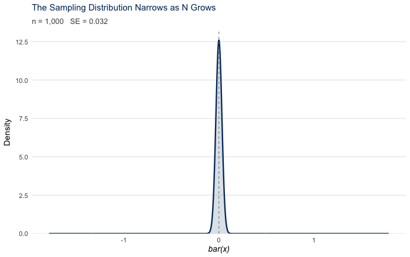
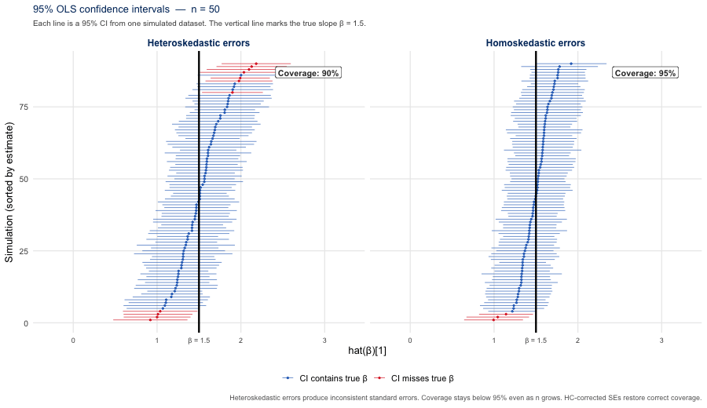
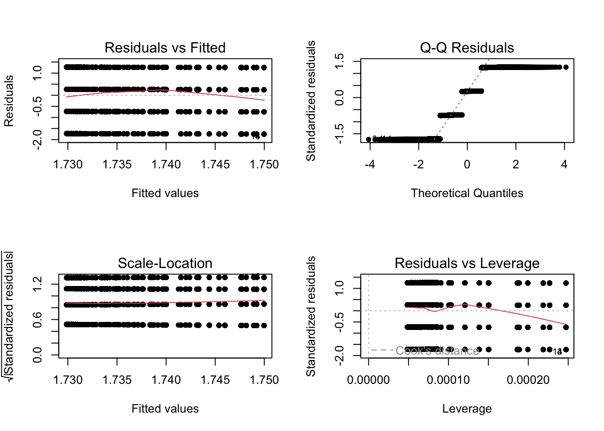
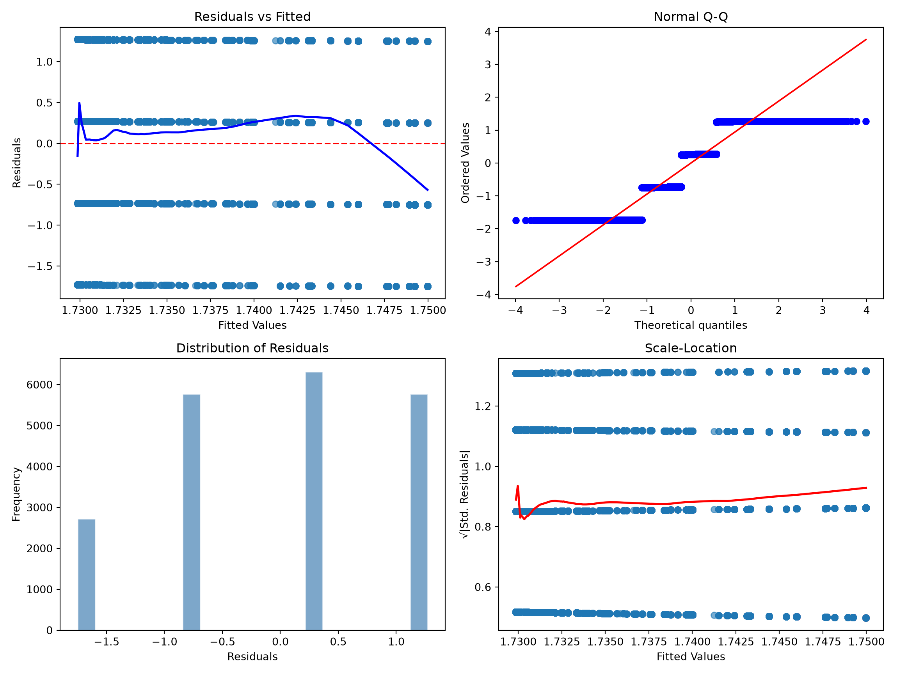
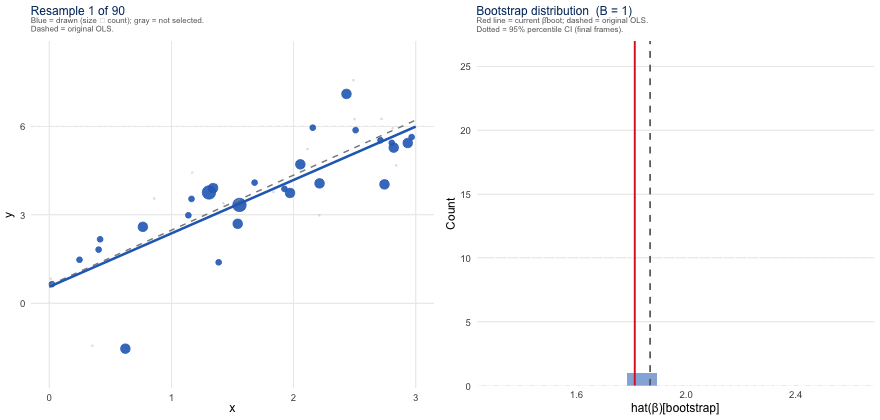
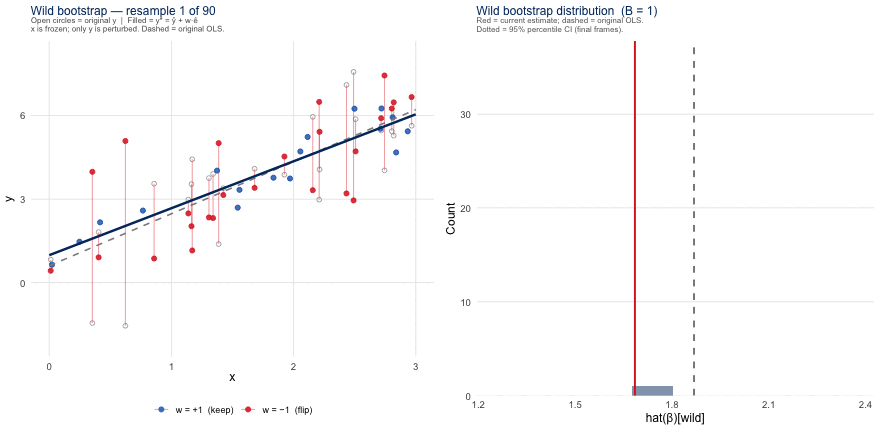
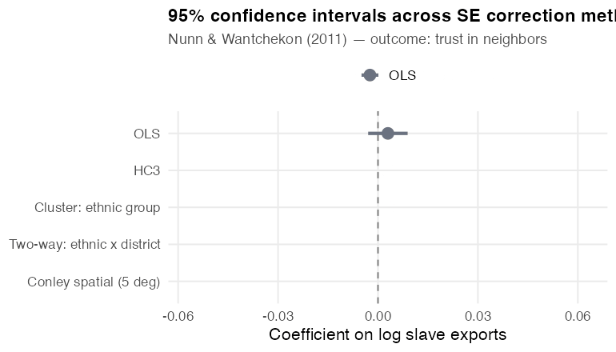

Standard Errors in Applied Research
Abstract
Standard errors are the foundation of statistical inference, yet choosing the wrong one undermines every confidence interval and hypothesis test that follows. This guide walks applied researchers through the full decision chain: diagnosing heteroskedasticity, choosing between HC variants, clustering, spatial and HAC corrections, and bootstrap methods. Each section pairs concise statistical motivation with executable code in R, Python, Stata, and Julia, using Nunn and Wantchekon (2011) as a running example.
Keywords
standard errors, heteroskedasticity, robust inference, cluster-robust, Newey-West, HAC, Conley, bootstrap, wild cluster bootstrap, sandwich estimator
Introduction
Every estimate in applied research carries uncertainty. The standard error is how we measure it, and choosing the wrong one undermines every confidence interval and hypothesis test that follows, regardless of how carefully the data were collected or the model specified. Informally, the standard error measures how spread out a sample statistic would be across repeated samples from the same population: it quantifies estimation variability, not the distance between any single estimate and the truth. More formally:
Definition: Standard Error
The standard error of an estimator \(\hat{\theta}\) is the standard deviation of its sampling distribution:
\[SE(\hat{\theta}) = \sqrt{Var(\hat{\theta})}\]
For the sample mean \(\bar{x}\) drawn from a population with variance \(\sigma^2\):
\[SE(\bar{x}) = \frac{\sigma}{\sqrt{n}}\]
The estimator’s validity depends entirely on assumptions about how the data were generated.
These formulas rest on an assumption that rarely holds in practice: that observations are independent and identically distributed (i.i.d.). Survey respondents live in households, in neighborhoods, in counties. Experimental subjects interact. Observations in panel data are taken from the same unit across time. When the independence assumption breaks down, classical standard errors are biased, sometimes severely so, as when cluster sizes are large relative to the number of clusters.
The difficulty is compounded by the fact that misspecified standard errors leave no trace in standard fit statistics. A regression can have an excellent R-squared and a well-specified mean function yet still produce completely invalid confidence intervals and p-values, because R-squared measures the fit of the conditional mean, not the structure of the residuals. Fixing standard errors is not a single decision but a chain of decisions that traces back to how your data were generated. This guide is organized around that chain.
Measuring Uncertainty
The first step in selecting standard errors is to identify the sources of uncertainty. Uncertainty generally takes two forms: sampling uncertainty and design uncertainty.
Sampling uncertainty arises when we observe a sample and wish to make claims about the population. As noted in the previous section, for a sample mean \(\bar{x}\) drawn from a population with variance \(\sigma^2\), the standard error is defined as: \[SE(\bar{x}) = \frac{\sigma}{\sqrt{n}}\]
Here \(\sigma\) is the population standard deviation; \(1/\sqrt{n}\) reflects that larger samples yield more precise estimates, a consequence of \(\text{Var}(\bar{x}) = \sigma^2/n\).
The animation below shows this shrinkage directly: as the sample size increases, the distribution of sample means tightens around the true population mean, with the spread narrowing at the \(1/\sqrt{n}\) rate.
Design uncertainty originates from the choices researchers make about how to collect and structure data. When the unit of sampling or treatment differs from the unit of analysis (for example, households sampled, individuals analyzed; states treated, counties measured), standard errors must account for the within-group correlation this design creates. The right SE is determined not by what the data look like, but by how they were generated (Abadie et al. 2023; see also Abadie et al. 2020 for the sampling-based versus design-based framework underlying this distinction).
Non-Standard Errors: Researcher Decisions as a Source of Uncertainty
A third source of variation often goes unacknowledged: non-standard errors (NSEs). These arise not from the data-generating process but from the choices each researcher makes along the analytical pipeline: model specification, variable construction, sample restrictions, outlier treatment, bandwidth selection, and more. Different teams working with identical data and answering the same research question routinely arrive at different estimates, simply because they made different but defensible decisions.
Menkveld et al. (2024) documented this directly: 164 teams tested the same hypotheses on the same dataset. The resulting non-standard errors were as large as the statistical standard errors themselves. Adding peer-review stages reduced but did not eliminate the variation. Preliminary evidence from newer collaborative studies suggests the pattern extends well beyond finance.
The practical implication is straightforward: report enough about your analytic choices that a reader could reconstruct your estimates, and treat robustness checks not as a courtesy but as a necessary form of uncertainty quantification for decisions that are not pinned down by theory.
Key references: Menkveld et al. (2024); see also the SSRN working paper.
Notation used throughout
Every section shares one set of symbols. The two distinctions that trip people up are the latent error \(\epsilon_i\) versus the fitted residual \(\hat{e}_i\), and leverage \(h_{ii}\) versus the spatial bandwidth \(h\).
| Symbol | Meaning |
|---|---|
| \(y_i\), \(\mathbf{x}_i\) | outcome and regressor row for unit \(i\) |
| \(\boldsymbol{\beta}\), \(\hat{\boldsymbol{\beta}}\) | coefficient vector and its OLS estimate |
| \(\epsilon_i\) | latent (true, unobserved) error |
| \(\hat{e}_i\) | OLS residual (observed; \(\hat{e}_i \ne \epsilon_i\)) |
| \(n\) | number of observations |
| \(k\) | number of estimated parameters (including the intercept) |
| \(\mathbf{X}\) | the \(n \times k\) model matrix |
| \(h_{ii}\) | leverage: the \(i\)-th diagonal of the hat matrix \(\mathbf{X}(\mathbf{X}^\top\mathbf{X})^{-1}\mathbf{X}^\top\) |
| \(\hat{V}\) | estimated variance–covariance matrix of \(\hat{\boldsymbol{\beta}}\) |
| \(\hat{\Omega}\) | diagonal “meat” matrix of squared residuals in the HC sandwich |
| \(G\), \(g\), \(n_g\) | number of clusters, cluster index, size of cluster \(g\) |
| \(G_A\), \(G_B\) | cluster counts in each dimension of two-way clustering |
| \(K_{BM}\) | Bell–McCaffrey effective degrees of freedom |
| \(\kappa(\cdot)\) | kernel function (HAC and spatial) |
| \(L\) | HAC bandwidth (maximum lag) |
| \(h\), \(d_{ij}\) | spatial bandwidth (distance cutoff) and distance between \(i\) and \(j\) |
| \(\hat{\Gamma}_j\) | lag-\(j\) autocovariance of the score (HAC) |
| \(\rho\) | sampling fraction: the share of each cluster’s target population observed |
| \(B\), \(w_i\) | bootstrap replications and the wild-bootstrap weight on residual \(i\) |
Choosing the Right Standard Errors
Work through the questions below in order. Each answer narrows the field; the tree terminates at the estimator appropriate for your sampling process and research design.
If you prefer a static summary, a condensed conversion table from data structure and research design to the recommended standard error, with the R, Python, and Stata calls for each, is collected in the Appendix (Table 2).
Working Example: Nunn and Wantchekon (2011)
Nunn and Wantchekon (2011) ask whether the Atlantic and Indian Ocean slave trades, which forcibly removed tens of millions of people from Africa between the fifteenth and twentieth centuries, left a lasting legacy of distrust. Using Afrobarometer survey data merged with Nunn (2008)’s historical estimates of slave exports by ancestral ethnic group, they find that individuals today whose ancestors experienced more intensive slave raiding report lower trust in neighbors, relatives, and local institutions.
The dataset is a natural fit for a guide on standard errors. The key regressor, historical slave exports, is measured at the ethnic-group level, and both within-country error correlation and substantial cross-country variation in colonial history are key features of the data. Each standard error correction covered in this guide addresses a different aspect of that structure.
For instructional purposes, this guide uses a simplified bivariate model, trust_neighbors ~ ln_exports, to demonstrate standard-error mechanics with real data. This working example omits controls, fixed effects, survey-design details, and other modeling choices that would matter for a faithful replication of Nunn and Wantchekon (2011). Some sections use this model to show implementation mechanics rather than to recommend a final inferential strategy. When a method requires a different data structure, we say so and use a more appropriate example.
Download the Data
Paper: Nunn, N., & Wantchekon, L. (2011). The slave trade and the origins of mistrust in Africa. American Economic Review, 101(7), 3221–3252. View paper and replication data →
Data: Replication files are available from the AER supplementary materials and Nathan Nunn’s Harvard website.
Decision Walkthrough: Nunn and Wantchekon
Walking this paper through the guide’s decision chain shows why no single correction settles the question, and lets us compare the authors’ choices with what current practice would recommend.
What the authors did. Worried about within-group correlation of the residuals, Nunn and Wantchekon report three SE schemes side by side in their Table 1: clustering by ethnic group (square brackets), two-way clustering by ethnic group and district (parentheses), and Conley (1999) spatial standard errors with a uniform 5-degree window (curly brackets). All three came out essentially identical, and they adopted two-way ethnic-by-district clustering for the remainder of the paper. Reporting several defensible corrections and showing they agree is itself good practice.
How we would reason from scratch. Cluster where the design introduces dependence: the key regressor, slave exports, varies at the ethnic-group level, so the ethnic group is the natural clustering level, and with roughly 185 ethnic groups, far above the small-\(G\) danger zone, ordinary cluster-robust SEs are reliable here (see the Cluster-Robust section). The two-way ethnic-by-district scheme additionally guards against local spatial correlation, and because slave exports are spatially smooth that concern is genuine. This is where recent work updates the 2011 toolkit: Conley and Kelly (2025) show that a fixed-window Conley correction can still be anti-conservative when a regressor is spatially trending, so rather than lean on a single 5-degree window we would de-trend with a spatial basis and run a placebo test (the spatInfer workflow) alongside the cluster-robust SEs (see the Spatial section).
A note on cluster count. Nothing here forces a few-cluster problem, because the operative clustering level (ethnic group) has many clusters. Had we instead clustered at the country level, with only 16 countries we would be squarely in the small-\(G\) regime and would need the wild cluster bootstrap (see the Bootstrap section) — a contrast the guide uses that section to demonstrate.
Robust (HC) Standard Errors
The Problem: Heteroskedasticity
Regression is where SE choices are arguably most consequential, because the errors we assume drive every test statistic and confidence interval we report. Consider a simple linear regression:
\[y_i = \mathbf{x}_i^\top\boldsymbol{\beta} + \epsilon_i\]
Here \(\hat{\beta}\) is our coefficient estimate, and \(SE(\hat{\beta})\) is what we need to construct valid test statistics, p-values, and confidence intervals. Whether those standard errors are trustworthy depends on two distinct assumptions about the latent error \(\epsilon_i\), the true, unobservable deviation rather than the OLS residual \(\hat{e}_i\) we compute from data. Exogeneity (\(E[\epsilon_i \mid \mathbf{x}_i] = 0\)) is required for unbiased point estimates. Homoskedasticity (\(\text{Var}(\epsilon_i \mid \mathbf{x}_i) = \sigma^2\)) is required for valid standard errors. These are independent: a researcher with heteroskedastic but exogenous errors gets correct point estimates and only wrong SEs. The OLS residuals \(\hat{e}_i\) (the differences between observed and predicted values of \(y\)) are constrained by the OLS fitting procedure to be mean-zero and orthogonal to \(\mathbf{X}\); these are algebraic consequences of OLS, not assumptions.
When homoskedasticity holds and error variance is constant across observations, OLS standard errors are valid. When it fails, meaning \(\text{Var}(\epsilon_i \mid \mathbf{x}_i)\) depends on the regressors or on some unobserved feature of the data, we have heteroskedasticity. The OLS standard errors are then inconsistent: they fail to converge to the correct value as \(n \to \infty\), producing asymptotically invalid confidence intervals. In practice they are most often too small, but the direction depends on the joint distribution of error variance and the regressors. The point estimates themselves are unaffected; only the uncertainty is wrong.
Diagnosing Heteroskedasticity
Residual diagnostic plots are the first line of defense. The workflow is the same in any software:
- Run your model. Fit a standard OLS regression.
- Plot the residuals. The residuals vs. fitted plot and the scale-location plot are the most direct indicators. Under homoskedasticity, residual spread should be roughly constant across the range of fitted values.
- Read the plots. A fan shape, a funnel, or any systematic change in spread signals heteroskedasticity. Curvature on the Q-Q plot and heavy tails are additional warning signs.
- Consider a formal test. A Breusch-Pagan test (Breusch and Pagan 1979) regresses squared residuals on the original predictors; a significant result rejects homoskedasticity. In large samples, the test will often flag minor, practically inconsequential deviations as statistically significant because high \(n\) gives the test power to detect trivially small heteroskedasticity; residual plots are usually more informative for applied purposes.
- Consider HC standard errors. In many cross-sectional settings HC2 or HC3 is a reasonable default rather than a correction that requires permission from a diagnostic test. Use the residual plots to understand the severity of any heteroskedasticity and to inform which variant is appropriate, not to decide whether to apply HC at all.
The figure below illustrates what is at stake. Each line is a 95% OLS confidence interval from one simulated dataset; the vertical line marks the true \(\beta = 1.5\). Both panels show the CIs tightening as \(n\) grows; the point estimates converge correctly in both cases. Under homoskedasticity, coverage stays near 95%. Under heteroskedasticity, the OLS standard errors are inconsistent: more intervals miss the true \(\beta\), and this coverage shortfall does not close with larger samples.

The code below runs diagnostic plots on Nunn and Wantchekon (2011). The Python tab exports the plots to images/; all other tabs render inline.
nunn <- haven::read_dta("data/Nunn_Wantchekon_AER_2011.dta")
regression <- lm(trust_neighbors ~ ln_exports, data = nunn)
par(mfrow = c(2, 2))
plot(regression, pch = 19, cex = 0.8)
import numpy as np
import pandas as pd
import statsmodels.api as sm
import statsmodels.nonparametric.api as nparam
import matplotlib.pyplot as plt
import scipy.stats as stats
nunn = pd.read_stata("data/Nunn_Wantchekon_AER_2011.dta")
reg1 = sm.formula.ols("trust_neighbors ~ ln_exports", data=nunn).fit()
residuals = reg1.resid
fitted_values = reg1.fittedvalues
# Internally studentized residuals for the scale-location plot
std_residuals = reg1.get_influence().resid_studentized_internal
fig, axes = plt.subplots(2, 2, figsize=(12, 9))
axes[0, 0].scatter(fitted_values, residuals, alpha=0.6)
axes[0, 0].axhline(0, color="red", linestyle="--")
lowess = nparam.lowess(residuals, fitted_values, frac=0.3)
axes[0, 0].plot(lowess[:, 0], lowess[:, 1], color="blue", linewidth=2)
axes[0, 0].set(title="Residuals vs Fitted", xlabel="Fitted Values", ylabel="Residuals")
stats.probplot(residuals, dist="norm", plot=axes[0, 1])((array([-3.98542269, -3.76960615, -3.65152731, ..., 3.65152731,
3.76960615, 3.98542269], shape=(20580,)), array([-1.74997556, -1.74997556, -1.74997556, ..., 1.27013099,
1.27013099, 1.27013099], shape=(20580,))), (np.float64(0.9424317803632147), np.float64(5.932626781982231e-16), np.float64(0.9331372837619768)))axes[0, 1].set_title("Normal Q-Q")
axes[1, 0].hist(residuals, bins=20, alpha=0.7, color="steelblue", edgecolor="white")
axes[1, 0].set(title="Distribution of Residuals", xlabel="Residuals", ylabel="Frequency")
sqrt_std = np.sqrt(np.abs(std_residuals))
axes[1, 1].scatter(fitted_values, sqrt_std, alpha=0.6)
lowess2 = nparam.lowess(sqrt_std, fitted_values, frac=0.3)
axes[1, 1].plot(lowess2[:, 0], lowess2[:, 1], color="red", linewidth=2)
axes[1, 1].set(title="Scale-Location", xlabel="Fitted Values", ylabel="√|Std. Residuals|")
plt.tight_layout()
plt.savefig("images/diagnostic_plots.png", dpi=120)
plt.show()
use "data/Nunn_Wantchekon_AER_2011.dta", clear
regress trust_neighbors ln_exports
predict fitted_vals, xb
predict residuals, resid
predict std_residuals, rstandard
gen sqrt_abs_std = sqrt(abs(std_residuals))
predict leverage, leverage
scatter residuals fitted_vals, yline(0) title("Residuals vs. Fitted") name(p1, replace)
qnorm residuals, title("Normal Q-Q") name(p2, replace)
scatter sqrt_abs_std fitted_vals, title("Scale-Location") name(p3, replace)
scatter std_residuals leverage, title("Residuals vs. Leverage") name(p4, replace)
graph combine p1 p2 p3 p4, rows(2) Source | SS df MS Number of obs = 20,580
-------------+---------------------------------- F(1, 20578) = 0.97
Model | .989159646 1 .989159646 Prob > F = 0.3247
Residual | 20984.2025 20,578 1.01973965 R-squared = 0.0000
-------------+---------------------------------- Adj R-squared = -0.0000
Total | 20985.1916 20,579 1.01973816 Root MSE = 1.0098
------------------------------------------------------------------------------
trust_neig~s | Coefficient Std. err. t P>|t| [95% conf. interval]
-------------+----------------------------------------------------------------
ln_exports | .0029778 .0030234 0.98 0.325 -.0029484 .008904
_cons | 1.729869 .0093682 184.65 0.000 1.711507 1.748231
------------------------------------------------------------------------------
(120 missing values generated)
(1,242 missing values generated)
(1,242 missing values generated)
(1,242 missing values generated)
(120 missing values generated)using GLM, DataFrames, ReadStataTables, Plots, Distributions
nunn = DataFrame(readstat("data/Nunn_Wantchekon_AER_2011.dta"))
model = lm(@formula(trust_neighbors ~ ln_exports), nunn)
resids = residuals(model)
fitted = predict(model)
std_res = resids ./ std(resids)
p1 = scatter(fitted, resids, xlabel="Fitted Values", ylabel="Residuals",
title="Residuals vs Fitted", legend=false, markeralpha=0.6)
hline!(p1, [0], linestyle=:dash, color=:red)
# NOTE: this panel plots raw residuals against a normal scaled to their SD,
# whereas the R/Python tabs plot standardized residuals; the two are equivalent
# up to the estimated scale and may look slightly different.
p2 = qqplot(Normal(0, std(resids)), resids, title="Normal Q-Q",
xlabel="Theoretical Quantiles", ylabel="Sample Quantiles")
p3 = scatter(fitted, sqrt.(abs.(std_res)), xlabel="Fitted Values",
ylabel="√|Std. Residuals|", title="Scale-Location",
legend=false, markeralpha=0.6)
plot(p1, p2, p3, layout=(1, 3), size=(1100, 380))Copy and adapt this prompt for your model:
I am running an OLS regression in [R / Python / Stata / Julia].
Model: [dependent variable] ~ [predictor 1, predictor 2, ...]
Sample size: n = [N]
Data: [cross-section / panel / time series]
From my residual diagnostic plots I observe:
- Residuals vs Fitted: [fan shape / funnel / random scatter / other]
- Scale-Location: [flat LOWESS / upward slope / other]
- Q-Q Plot: [on the line / heavy tails / curvature]
Please:
1. Confirm whether this is consistent with heteroskedasticity.
2. Recommend which HC estimator (HC0-HC5) is appropriate given
my sample size and research design.
3. Provide the code to apply it and compare the original and
corrected standard errors side by side.Applying HC Standard Errors
When the diagnostics point to heteroskedasticity, we replace OLS standard errors with heteroskedasticity-consistent (HC) standard errors (White 1980), also called Huber-White, sandwich, or simply robust standard errors. Rather than assuming constant variance, each observation’s squared OLS residual \(\hat{e}_i^2\) serves as its own variance estimate. HC standard errors are consistent for the true sandwich variance under mild regularity conditions (they converge to the correct value as \(n \to \infty\)) but are not unbiased in finite samples, which motivates the small-sample corrections below.
\[\hat{V}(\hat{\boldsymbol{\beta}}) = (\mathbf{X}^\top\mathbf{X})^{-1}\mathbf{X}^\top\hat{\Omega}\mathbf{X}(\mathbf{X}^\top\mathbf{X})^{-1}\]
where \(\mathbf{X}\) is the \(n \times k\) model matrix (\(k\) parameters, including the intercept) and \(\hat{\Omega} = \text{diag}(\hat{e}_1^2, \ldots, \hat{e}_n^2)\) is an \(n \times n\) diagonal matrix with each observation’s squared OLS residual on the diagonal. The “sandwich” name comes from \(\mathbf{X}^\top \hat{\Omega} \mathbf{X}\) being sandwiched between \((\mathbf{X}^\top \mathbf{X})^{-1}\) on each side. This displayed form, with \(\hat{\Omega} = \text{diag}(\hat{e}_1^2, \ldots, \hat{e}_n^2)\), is the HC0 estimator. The variants below leave the sandwich structure unchanged and only reweight the diagonal entries to correct HC0’s finite-sample downward bias.
Several variants differ in how they adjust \(e_i^2\) for small-sample bias:
| Estimator | Adjustment | When to Use |
|---|---|---|
| HC0 | Raw \(e_i^2\) | Large \(n\) only; biased downward in small samples |
| HC1 | Multiply by \(n/(n-k)\) | Default in Stata robust |
| HC2 | Divide by \(1 - h_{ii}\) | Exact under homoskedastic randomized assignment (Imbens and Kolesar 2016); moderate \(n\) |
| HC3 | Divide by \((1 - h_{ii})^2\) | Default recommendation; most conservative of HC0–HC3 |
| HC4/HC5 | Divide by \((1 - h_{ii})^{\delta_i}\), \(\delta_i = \min(4,\, h_{ii}/\bar{h})\) (Cribari-Neto 2004) | High-leverage observations present |
In most applied work, HC2 or HC3 is appropriate. HC3 is the conservative default and performs well across sample sizes. If the data come from a randomized experiment, HC2 has an exact finite-sample justification (Imbens and Kolesar 2016).
| Function | Package | Description | Type Options |
|---|---|---|---|
vcovHC() |
sandwich | HC variance-covariance matrix | “HC0”–“HC5” |
vcovCL() |
sandwich | Cluster-robust variance-covariance | cluster formula |
vcovHAC() |
sandwich | HAC (Newey-West) | kernel options |
coeftest() |
lmtest | Recompute SEs from a vcov matrix | used with sandwich |
lm_robust() |
estimatr | Regression with built-in HC/cluster | “HC2”, “HC3”, “CR2” |
feols() |
fixest | Fast HC, cluster, two-way cluster | se = "hetero" |
nunn <- haven::read_dta("data/Nunn_Wantchekon_AER_2011.dta")
regression <- lm(trust_neighbors ~ ln_exports, data = nunn)
regression_robust <- lmtest::coeftest(
regression, vcov = sandwich::vcovHC(regression, type = "HC2")
)
regression_robust
t test of coefficients:
Estimate Std. Error t value Pr(>|t|)
(Intercept) 1.7298690 0.0093408 185.1945 <2e-16 ***
ln_exports 0.0029778 0.0031236 0.9533 0.3404
---
Signif. codes: 0 '***' 0.001 '**' 0.01 '*' 0.05 '.' 0.1 ' ' 1| Argument | Package | Description | Options |
|---|---|---|---|
cov_type="HC2" |
statsmodels | HC robust SEs | “HC0”–“HC3” |
cov_type="HAC" |
statsmodels | HAC (Newey-West) SEs | maxlags= |
cov_type="cluster" |
statsmodels | Cluster-robust SEs | cov_kwds={"groups": ...} |
import statsmodels.api as sm
import pandas as pd
nunn = pd.read_stata("data/Nunn_Wantchekon_AER_2011.dta")
reg = sm.OLS.from_formula("trust_neighbors ~ ln_exports", data=nunn).fit(cov_type="HC2")
print(reg.summary()) OLS Regression Results
==============================================================================
Dep. Variable: trust_neighbors R-squared: 0.000
Model: OLS Adj. R-squared: -0.000
Method: Least Squares F-statistic: 0.9088
Date: Mon, 29 Jun 2026 Prob (F-statistic): 0.340
Time: 14:13:54 Log-Likelihood: -29402.
No. Observations: 20580 AIC: 5.881e+04
Df Residuals: 20578 BIC: 5.882e+04
Df Model: 1
Covariance Type: HC2
==============================================================================
coef std err z P>|z| [0.025 0.975]
------------------------------------------------------------------------------
Intercept 1.7299 0.009 185.195 0.000 1.712 1.748
ln_exports 0.0030 0.003 0.953 0.340 -0.003 0.009
==============================================================================
Omnibus: 7464.971 Durbin-Watson: 1.464
Prob(Omnibus): 0.000 Jarque-Bera (JB): 1166.555
Skew: -0.225 Prob(JB): 4.85e-254
Kurtosis: 1.924 Cond. No. 4.32
==============================================================================
Notes:
[1] Standard Errors are heteroscedasticity robust (HC2)| Command | Description | Options |
|---|---|---|
regress y x, robust |
HC1 robust SEs | Stata default |
regress y x, vce(hc2) |
HC2 robust SEs | hc2, hc3 available |
regress y x, cluster(var) |
Cluster-robust SEs | cluster variable |
newey y x, lag(#) |
HAC (Newey-West) SEs | number of lags |
vce(robust) |
HC for non-OLS models | |
vce(cluster var) |
Clustered for non-OLS models |
use "data/Nunn_Wantchekon_AER_2011.dta", clear
regress trust_neighbors ln_exports, vce(hc2)Linear regression Number of obs = 20,580
F(1, 20578) = 0.91
Prob > F = 0.3404
R-squared = 0.0000
Root MSE = 1.0098
------------------------------------------------------------------------------
| Robust HC2
trust_neig~s | Coefficient std. err. t P>|t| [95% conf. interval]
-------------+----------------------------------------------------------------
ln_exports | .0029778 .0031236 0.95 0.340 -.0031447 .0091003
_cons | 1.729869 .0093408 185.19 0.000 1.71156 1.748178
------------------------------------------------------------------------------| Function | Package | Description | Types |
|---|---|---|---|
stderror(model, HC2()) |
CovarianceMatrices | HC robust SEs | HC0()–HC4() |
vcov(model, HC2()) |
CovarianceMatrices | HC variance-covariance matrix | |
stderror(model, CRHC2(groups)) |
CovarianceMatrices | Cluster-robust SEs | CRHC0()–CRHC3() |
using GLM, DataFrames, ReadStataTables, CovarianceMatrices
nunn = DataFrame(readstat("data/Nunn_Wantchekon_AER_2011.dta"))
model = lm(@formula(trust_neighbors ~ ln_exports), nunn)
stderror(model, HC2())I have confirmed heteroskedasticity in my OLS model.
Model: [dependent variable] ~ [predictors]
Sample size: n = [N]
Design: [observational / randomized experiment / survey]
1. I am choosing between HC2 and HC3. Which is more appropriate
for my context and why?
2. Provide the code in [R / Python / Stata / Julia] to apply it.
3. My original SE on [key coefficient] was [X] and after applying
HC[n] it is [Y]. Is this change meaningful, and what does it
suggest about the error structure?
The sandwich is one structure; every correction just changes the filling
Before moving on, it helps to see that everything still to come is the same estimator with one piece swapped. Writing the OLS estimator as \(\hat{\boldsymbol{\beta}} = \boldsymbol{\beta} + (\mathbf{X}^\top\mathbf{X})^{-1}\sum_i \mathbf{x}_i \epsilon_i\), a central limit theorem gives
\[\sqrt{n}\,(\hat{\boldsymbol{\beta}} - \boldsymbol{\beta}) \;\xrightarrow{d}\; \mathcal{N}\!\left(\mathbf{0},\; \mathbf{Q}^{-1}\,\boldsymbol{\Omega}\,\mathbf{Q}^{-1}\right),\]
with \(\mathbf{Q} = \mathbb{E}[\mathbf{x}_i\mathbf{x}_i^\top]\) and \(\boldsymbol{\Omega} = \lim_{n\to\infty}\mathrm{Var}\!\left(\tfrac{1}{\sqrt{n}}\textstyle\sum_i \mathbf{x}_i \epsilon_i\right)\).
The bread \(\mathbf{Q}^{-1}\), estimated by \((\mathbf{X}^\top\mathbf{X}/n)^{-1}\), is the same in every method in this guide. All the action is in the meat \(\boldsymbol{\Omega}\), the asymptotic variance of the score \(\mathbf{x}_i\epsilon_i\). Under independence it collapses to \(\boldsymbol{\Omega} = \mathbb{E}[\epsilon_i^2\,\mathbf{x}_i\mathbf{x}_i^\top]\) (the HC case we just covered), and that meat is the only thing each correction estimates differently:
- HC assumes the scores are independent across \(i\): the meat is diagonal, \(\hat{\Omega} = \mathrm{diag}(\hat{e}_i^2)\).
- Cluster-robust allows arbitrary correlation within clusters: the meat sums over cluster blocks \(\mathbf{X}_g^\top\hat{\mathbf{e}}_g\hat{\mathbf{e}}_g^\top\mathbf{X}_g\).
- HAC allows correlation across nearby time periods: the meat adds kernel-weighted lagged autocovariances \(\hat{\Gamma}_j\).
- Conley/spatial allows correlation across nearby locations: the meat adds kernel-weighted cross-products of pairs within distance \(h\).
Read this way, the rest of the guide is one decision: which off-diagonal correlations does my design create, and therefore which entries of the meat are nonzero? The bread never changes. The next sections work through that question one design at a time, starting with clustering.
Cluster-Robust Standard Errors
HC standard errors handle heteroskedasticity in errors that are independent across observations. But independence itself breaks down when observations share something in common by design: students sampled from the same classroom, survey respondents drawn from the same village, firms assigned treatment as a block within the same industry, the same individual measured repeatedly over time, voters exposed to the same precinct-level shock. The trigger for clustering is the design that generated the data: sampling, treatment assignment, repeated measures, or shared exposure. It is not simply an observation that errors within a group happen to be correlated. HC standard errors are still wrong under any of these designs. We need cluster-robust standard errors.
The cluster-robust (“Liang-Zeger”) variance estimator keeps the sandwich structure but builds the meat from cluster-level sums rather than observation-level ones:
\[\hat{V}_{CR}(\hat{\boldsymbol{\beta}}) = (\mathbf{X}^\top\mathbf{X})^{-1}\left(\sum_{g=1}^{G}\mathbf{X}_g^\top \hat{\mathbf{e}}_g \hat{\mathbf{e}}_g^\top \mathbf{X}_g\right)(\mathbf{X}^\top\mathbf{X})^{-1}\]
where \(g = 1, \ldots, G\) indexes clusters, \(\mathbf{X}_g\) stacks the rows of \(\mathbf{X}\) for cluster \(g\), and \(\hat{\mathbf{e}}_g\) is that cluster’s residual vector. The meat allows arbitrary within-cluster correlation while assuming independence across clusters (Liang and Zeger 1986). Software typically multiplies by a finite-sample factor: Stata’s cluster default is \(c = \tfrac{G}{G-1}\cdot\tfrac{N-1}{N-k}\), while sandwich::vcovCL applies \(\tfrac{G}{G-1}\) by default (the full Stata factor is available through its arguments). Inference then uses \(t_{G-1}\) rather than the normal. Consistency requires \(G \to \infty\), which is why few-cluster designs need the corrections discussed below.
The key design questions before you cluster:
- What creates the clustering? The sampling design, treatment assignment mechanism, repeated-measures structure, or shared exposure determines the right clustering level, not the presence of within-group correlation in the outcome. If you sampled districts and surveyed individuals within them, cluster at the district. If treatment was assigned at the school level, cluster at the school, regardless of whether you think school-level unobservables exist. If the same unit is measured repeatedly over time, cluster at the unit. If units share a common exposure (a market, a policy, a shock), cluster at the level of that exposure (Abadie et al. 2023).
- Cluster at the right level. Cluster at the level where sampling or assignment introduced dependence. Clustering too low (at the individual when treatment is at the group) understates uncertainty and inflates test statistics. Clustering too high wastes precision.
- Count your clusters. Cluster-robust inference degrades when the number of clusters is small, roughly below 30 to 50 (Cameron and Miller 2015; Jackson 2020). This 30-to-50 figure is a rough heuristic, not a threshold: what actually governs reliability is the effective degrees of freedom for your contrast (see the near-census and skewed-design FAQs), which can be far below \(G - 1\) when treatment is concentrated in a few clusters. With few clusters, consider the wild cluster bootstrap, CR2 corrections via
clubSandwich, or the finite-sample adjustments available throughfixest::ssc()where appropriate. - Weights change the variance estimator. If you run WLS or use survey/probability weights, the ordinary cluster sandwich (
sandwich::vcovCL, thefeolsdefault) is not consistent for the weighted estimator. UseclubSandwich::coef_test(fit, vcov = "CR2", cluster = ~ g)(or a survey-design estimator) instead; the leverage correction is what restores validity under non-constant weights. - Two-way clustering. When two sources of correlation exist (say, by firm and by year in a panel), two-way clustering is an option. It requires enough clusters in both dimensions to be reliable; with sparse panels, the resulting variance matrix can be non-positive definite. When that happens,
fixest(andmultiwayvcov) can apply an eigenvalue-flooring fix (setting negative eigenvalues to zero), but a non-positive-definite result usually signals that one dimension has too few clusters: fall back to one-way clustering on the dimension with more clusters, or use the wild cluster bootstrap with \(\min(G_A, G_B)\) as the effective cluster count.
In Nunn and Wantchekon (2011) the key regressor, log slave exports, is defined at the level of a respondent’s ancestral ethnic group: everyone whose ancestry traces to the same group is assigned the same value. That is the design signature that calls for clustering — the right-hand-side variation lives at the group level, so the errors are almost certainly correlated within group as well. We cluster at the ethnic group (murdock_name), of which there are about 187:
A counterfactual: what if the variation had been at the country level?
With roughly 187 ethnic groups, we sit comfortably above the rough 30-to-50 cluster threshold, so ordinary cluster-robust standard errors are reliable here. But that threshold matters the moment the design changes. Suppose the key variable had instead varied at the country level: the estimation sample spans only 16 countries, well into the small-\(G\) regime where cluster-robust inference over-rejects (as the simulation shows). That is when you would reach for the wild cluster bootstrap instead. The Bootstrap section demonstrates exactly that, clustering by country on this same data.
nunn <- haven::read_dta("data/Nunn_Wantchekon_AER_2011.dta")
regression <- lm(trust_neighbors ~ ln_exports, data = nunn)
regression_clustered <- lmtest::coeftest(
regression, vcov = sandwich::vcovCL(regression, cluster = ~murdock_name)
)
regression_clustered
t test of coefficients:
Estimate Std. Error t value Pr(>|t|)
(Intercept) 1.7298690 0.0526941 32.8285 <2e-16 ***
ln_exports 0.0029778 0.0285699 0.1042 0.917
---
Signif. codes: 0 '***' 0.001 '**' 0.01 '*' 0.05 '.' 0.1 ' ' 1import statsmodels.api as sm
import pandas as pd
nunn = pd.read_stata("data/Nunn_Wantchekon_AER_2011.dta")
nunn = nunn.dropna(subset=["trust_neighbors", "ln_exports", "murdock_name"])
reg = sm.OLS.from_formula("trust_neighbors ~ ln_exports", data=nunn).fit(
cov_type="cluster",
cov_kwds={"groups": nunn["murdock_name"]}
)
# NOTE: statsmodels reports normal (z) critical values and a different
# small-sample adjustment than R/Stata. With many clusters (here ~187
# ethnic groups) the difference is negligible, but with few clusters it
# understates uncertainty: apply t(G-1) critical values manually and prefer
# the wild cluster bootstrap (see the Bootstrap section). pyfixest offers
# CRV3 and the wild bootstrap natively.
print(reg.summary()) OLS Regression Results
==============================================================================
Dep. Variable: trust_neighbors R-squared: 0.000
Model: OLS Adj. R-squared: -0.000
Method: Least Squares F-statistic: 0.01086
Date: Mon, 29 Jun 2026 Prob (F-statistic): 0.917
Time: 14:13:55 Log-Likelihood: -29402.
No. Observations: 20580 AIC: 5.881e+04
Df Residuals: 20578 BIC: 5.882e+04
Df Model: 1
Covariance Type: cluster
==============================================================================
coef std err z P>|z| [0.025 0.975]
------------------------------------------------------------------------------
Intercept 1.7299 0.053 32.828 0.000 1.627 1.833
ln_exports 0.0030 0.029 0.104 0.917 -0.053 0.059
==============================================================================
Omnibus: 7464.971 Durbin-Watson: 1.464
Prob(Omnibus): 0.000 Jarque-Bera (JB): 1166.555
Skew: -0.225 Prob(JB): 4.85e-254
Kurtosis: 1.924 Cond. No. 4.32
==============================================================================
Notes:
[1] Standard Errors are robust to cluster correlation (cluster)use "data/Nunn_Wantchekon_AER_2011.dta", clear
regress trust_neighbors ln_exports, cluster(murdock_name)Linear regression Number of obs = 20,580
F(1, 184) = 0.01
Prob > F = 0.9171
R-squared = 0.0000
Root MSE = 1.0098
(Std. err. adjusted for 185 clusters in murdock_name)
------------------------------------------------------------------------------
| Robust
trust_neig~s | Coefficient std. err. t P>|t| [95% conf. interval]
-------------+----------------------------------------------------------------
ln_exports | .0029778 .0285699 0.10 0.917 -.053389 .0593445
_cons | 1.729869 .0526941 32.83 0.000 1.625907 1.833831
------------------------------------------------------------------------------using GLM, DataFrames, ReadStataTables, CovarianceMatrices
nunn = DataFrame(readstat("data/Nunn_Wantchekon_AER_2011.dta"))
model = lm(@formula(trust_neighbors ~ ln_exports), nunn)
groups = nunn.murdock_name
stderror(model, CRHC2(groups))I am deciding whether and how to cluster my standard errors.
Data structure: [cross-section / panel / survey]
Sampling design: [how were units selected?]
Treatment assignment: [individual level / group level (what group?)]
Cluster variable: [candidate variable]
Number of clusters: G = [?]
1. Based on my design, should I cluster? At what level?
2. With G = [N] clusters, are cluster-robust SEs reliable, or
should I use the wild cluster bootstrap instead?
3. Provide the code in [R / Python / Stata / Julia] to implement
the appropriate correction.Spatial Standard Errors
When your units of observation have a geographic location (countries, regions, counties, grid cells), the independence assumption can fail not because of sampling or treatment design, but because nearby units resemble each other. Soil quality, climate, economic conditions, and institutional history all exhibit spatial continuity. Residuals that share this structure are spatially autocorrelated, and standard errors that ignore it are biased downward.
The standard fix is Conley (1999) standard errors, which extend the sandwich estimator by allowing correlation between observations as a function of geographic distance. Observations within a specified distance cutoff are treated as potentially correlated; those farther apart are treated as independent:
\[\hat{V}_{spatial}(\hat{\boldsymbol{\beta}}) = (\mathbf{X}^\top\mathbf{X})^{-1} \left(\sum_i \sum_j \kappa\!\left(\frac{d_{ij}}{h}\right) \mathbf{x}_i \mathbf{x}_j^\top \hat{e}_i \hat{e}_j \right) (\mathbf{X}^\top\mathbf{X})^{-1}\]
where \(d_{ij} = d_{ji}\) is the distance between units \(i\) and \(j\), \(h\) is the bandwidth (distance cutoff), and \(\kappa(\cdot)\) is a kernel with \(\kappa(0) = 1\) and \(\kappa(u) = 0\) for \(u > 1\), so that pairs farther apart than \(h\) receive zero weight. The uniform kernel \(\kappa(u) = \mathbf{1}\{u \le 1\}\) gives Conley’s original hard-cutoff form (arbitrary correlation within \(h\), independence beyond); the Bartlett kernel \(\kappa(u) = (1 - u)_+\) instead lets correlation decay linearly to zero at \(h\) and guarantees a positive-semidefinite \(\hat{V}\). The \(i = j\) terms reproduce the heteroskedasticity-robust (HC0) diagonal.
Conley SEs require coordinates, such as latitude and longitude, or some other distance metric, for every observation.1 Without them you cannot compute \(d_{ij}\) and the estimator is not defined. The bandwidth \(h\) is the most consequential choice, and there is no universal rule for setting it; it should reflect the plausible range of spatial correlation in your subject matter. Standard practice is to try several values and report sensitivity across them. If your conclusions change with the bandwidth, that is worth flagging rather than resolving by choosing a convenient default. Conley and Kelly (2025) documents that bandwidth choice in historical persistence regressions is frequently consequential and sometimes selected in ways that favor significance; that caution applies broadly. For the placebo-based spatial inference of Conley and Kelly (2025) specifically, spatial-basis de-trending plus a synthetic-treatment placebo test, the authors maintain the spatInfer R package (github.com/morganwkelly/spatInfer), which automates basis selection and the placebo reference distribution and is the most direct way to reproduce their recommended workflow.
Before reaching for Conley SEs, also consider whether simple regional clustering would suffice. If spatial correlation is well captured by a discrete grouping (continent, province, watershed), clustering by that group is simpler and often sufficient. Conley SEs earn their complexity when correlation decays continuously with distance rather than cleanly within administrative borders. For geographic coordinates, use great-circle distance rather than Euclidean distance; most implementations offer a spherical distance option.
library(fixest)
nunn <- haven::read_dta("data/Nunn_Wantchekon_AER_2011.dta")
# Conley SEs: conley(cutoff, distance) ~ lat_col + lon_col
# cutoff 500 is in KILOMETERS because distance = "spherical"; with the default
# Euclidean distance the cutoff is in the coordinates' own units (degrees here).
model_conley <- feols(
trust_neighbors ~ ln_exports,
data = nunn,
vcov = conley(500, distance = "spherical") ~ centroid_lat + centroid_long
)
summary(model_conley)OLS estimation, Dep. Var.: trust_neighbors
Observations: 20,580
Standard-errors: Conley (500km)
Estimate Std. Error t value Pr(>|t|)
(Intercept) 1.729869 0.091662 18.872256 < 2.2e-16 ***
ln_exports 0.002978 0.040881 0.072839 0.94193
---
Signif. codes: 0 '***' 0.001 '**' 0.01 '*' 0.05 '.' 0.1 ' ' 1
RMSE: 1.00977 Adj. R2: -1.457e-6# NOTE: There is no mature drop-in Conley (1999) estimator in Python. The code
# below computes the Kelejian-Prucha spatial HAC (spreg, robust="hac") -- related
# but NOT identical to Conley. For genuine Conley SEs, use fixest::feols(vcov =
# conley()) in R (see the R tab), or compute the distance-kernel sandwich by hand.
import pandas as pd
import numpy as np
from spreg import OLSModuleNotFoundError: No module named 'spreg'from libpysal.weights import KernelModuleNotFoundError: No module named 'libpysal'nunn = pd.read_stata("data/Nunn_Wantchekon_AER_2011.dta")
# Drop rows missing coordinates or model variables BEFORE building the
# kernel weights, so the weights object and y/X line up row for row
nunn = nunn.dropna(subset=["trust_neighbors", "ln_exports",
"centroid_long", "centroid_lat"])
coords = list(zip(nunn["centroid_long"], nunn["centroid_lat"]))
# Note: bandwidth is in decimal degrees. One degree ≈ 111 km at the equator
# but shrinks toward the poles. For data spanning all of Africa, a bandwidth
# of 4.5 corresponds roughly to 350–500 km depending on latitude; treat as
# approximate. Use projected coordinates (meters) for a precise 500 km cutoff.
gwk = Kernel(coords, fixed=True, bandwidth=4.5, function="triangular",
diagonal=True)NameError: name 'Kernel' is not definedy = nunn[["trust_neighbors"]].values
X = nunn[["ln_exports"]].values
# spreg.OLS with robust="hac" implements the Kelejian-Prucha (1999) spatial HAC
# estimator, similar in spirit to Conley (1999) but different in mechanics.
# It requires a KERNEL weights object passed via gwk= (not a binary
# contiguity/distance-band matrix passed via w=).
# For the Conley (1999) distance-kernel sandwich estimator, use fixest::feols()
# with vcov = conley() in R (see R tab).
model = OLS(y, X, gwk=gwk, robust="hac", name_y="trust_neighbors",
name_x=["ln_exports"])NameError: name 'OLS' is not definedprint(model.summary)NameError: name 'model' is not defined* Requires: ssc install acreg
use "data/Nunn_Wantchekon_AER_2011.dta", clear
acreg trust_neighbors ln_exports, ///
lat(centroid_lat) lon(centroid_long) dist(500) spherical# Spatial SEs are less mature in Julia than in R or Stata.
# The closest current option is CovarianceMatrices.jl with a
# user-supplied distance weight matrix.
using GLM, DataFrames, ReadStataTables, LinearAlgebra
nunn = DataFrame(readstat("data/Nunn_Wantchekon_AER_2011.dta"))
model = lm(@formula(trust_neighbors ~ ln_exports), nunn)
# Build a distance-based weight matrix (great-circle, 500 km cutoff)
# using your preferred geodistance function, then pass to a
# custom sandwich estimator. Dedicated spatial SE packages for
# Julia are in active development.I have cross-sectional data with geographic coordinates and
suspect spatial autocorrelation in my residuals.
Model: [dependent variable] ~ [predictors]
Unit of obs: [countries / counties / grid cells / other]
Coordinates: [latitude / longitude variable names]
Plausible range: [how far, in km, do you expect correlation to reach?]
Software: [R / Python / Stata / Julia]
1. Is Conley SEs the right approach, or would regional clustering
suffice given my unit of observation?
2. How sensitive should I expect my results to be to the choice
of bandwidth? Suggest a range of values to try.
3. Provide the code to implement Conley SEs with bandwidth h = [X] km
and show how to check sensitivity across h = [X, Y, Z].HAC Standard Errors
In time series and panel data, observations close in time are rarely independent. Today’s unemployment rate is shaped by yesterday’s; a firm’s quarterly earnings exhibit persistence; policy shocks carry over across periods. This serial correlation in errors biases OLS standard errors downward, making results appear more precise than they are.
HAC (heteroskedasticity and autocorrelation consistent) standard errors extend the sandwich estimator by weighting the cross-products of residuals with a kernel that decays as the lag distance grows:
\[\hat{V}_{HAC}(\hat{\boldsymbol{\beta}}) = (\mathbf{X}^\top\mathbf{X})^{-1} \hat{S} (\mathbf{X}^\top\mathbf{X})^{-1}\]
where the long-run variance is estimated as:
\[\hat{S} = \hat{\Gamma}_0 + \sum_{j=1}^{L} \kappa\!\left(\frac{j}{L+1}\right)\left(\hat{\Gamma}_j + \hat{\Gamma}_j^\top\right), \qquad \hat{\Gamma}_j = \frac{1}{T}\sum_{t=j+1}^{T} \mathbf{x}_t \mathbf{x}_{t-j}^\top \hat{e}_t \hat{e}_{t-j}\]
\(\kappa(\cdot)\) is a kernel function and \(L\) is the bandwidth (number of lags). The Newey and West (1987) estimator uses the Bartlett kernel \(\kappa(z) = 1 - |z|\) for \(|z| \leq 1\) (and \(0\) otherwise), giving lag-\(j\) autocovariance the weight \(1 - j/(L+1)\), which declines linearly from 1 at \(j=0\) to \(1/(L+1)\) at the last included lag \(j=L\) and is exactly 0 for \(j > L\). This tapering guarantees that \(\hat{S}\) is positive semi-definite. The \(\hat{\Gamma}_0\) term is the heteroskedasticity-robust (HC) component, so HAC nests HC.
The central applied choice is the lag length \(L\), which controls how many periods of autocorrelation the estimator accounts for. A common rule of thumb is \(L = \lfloor 4(T/100)^{2/9} \rfloor\) (Newey and West 1994), which gives roughly four lags at \(T = 100\); note that the MSE-optimal Bartlett bandwidth grows at rate \(T^{1/3}\), so for long series a faster-growing \(L\) may be warranted, and the two rules can give materially different \(L\). R’s NeweyWest() supports automatic, data-driven bandwidth selection via Andrews (1991) as an alternative to the rule of thumb, whereas Stata’s base newey command requires an explicit lag() and has no built-in data-driven bandwidth selection.2 When results are sensitive to \(L\), report them across a range of values.
In short panels, clustering by time period is often preferable to HAC, as it makes fewer assumptions about the temporal correlation structure and sidesteps the bandwidth choice. HAC is the natural choice for long time series. When panel data exhibit both within-unit serial correlation and cross-sectional dependence, two-way clustering (by unit and by time) handles both simultaneously; Driscoll and Kraay (1998) standard errors are a more principled alternative that extends Newey-West to allow spatio-temporal covariance decay; plm::vcovSCC() in R implements them. Driscoll-Kraay relies on a long time dimension, however; with short \(T\) it is unreliable, and two-way clustering or time fixed effects are safer. Before applying any correction, a Breusch-Godfrey test (Breusch 1978; Godfrey 1978) can confirm that serial correlation is actually present; a Durbin-Watson statistic near 2 suggests no problem, while values well below 2 indicate positive serial correlation.
The Nunn and Wantchekon data is a cross-section: it has no time dimension for Newey-West to act on, so applying HAC to it would be meaningless. To demonstrate HAC where it actually applies, we instead simulate a short time series with serially correlated errors and run the corrections on it.
Simulated time-series data for this example
The series below ships with the guide as data/hac_demo_timeseries.csv; this chunk documents how it was generated (it is not re-run at render). Adjust T_obs, phi, and beta and re-run it locally to explore how serial correlation widens HAC standard errors relative to OLS.
set.seed(123)
T_obs <- 200 # time periods
phi <- 0.7 # AR(1) coefficient of the errors (serial correlation)
beta <- 0.5 # true slope
x <- rnorm(T_obs)
e <- as.numeric(arima.sim(model = list(ar = phi), n = T_obs)) # serially correlated errors
y <- 1 + beta * x + e
hac_demo <- data.frame(t = seq_len(T_obs), y = y, x = x)
write.csv(hac_demo, "data/hac_demo_timeseries.csv", row.names = FALSE)library(sandwich)
library(lmtest)
ts_data <- read.csv("data/hac_demo_timeseries.csv")
model <- lm(y ~ x, data = ts_data)
# OLS standard errors (baseline)
coeftest(model)
t test of coefficients:
Estimate Std. Error t value Pr(>|t|)
(Intercept) 1.014312 0.091465 11.0896 < 2.2e-16 ***
x 0.471439 0.097217 4.8494 2.501e-06 ***
---
Signif. codes: 0 '***' 0.001 '**' 0.01 '*' 0.05 '.' 0.1 ' ' 1# Newey-West with automatic lag selection
# NeweyWest() prewhitens by default (prewhite = TRUE); the explicit-lag call
# below turns it off, so the two lines differ in prewhitening as well as in lag
# selection. Set prewhite = FALSE here too to isolate the effect of the lag.
coeftest(model, vcov = NeweyWest(model))
t test of coefficients:
Estimate Std. Error t value Pr(>|t|)
(Intercept) 1.014312 0.197251 5.1422 6.500e-07 ***
x 0.471439 0.091833 5.1336 6.768e-07 ***
---
Signif. codes: 0 '***' 0.001 '**' 0.01 '*' 0.05 '.' 0.1 ' ' 1# Newey-West with explicit lag
coeftest(model, vcov = NeweyWest(model, lag = 4, prewhite = FALSE))
t test of coefficients:
Estimate Std. Error t value Pr(>|t|)
(Intercept) 1.014312 0.148021 6.8525 8.975e-11 ***
x 0.471439 0.090756 5.1946 5.079e-07 ***
---
Signif. codes: 0 '***' 0.001 '**' 0.01 '*' 0.05 '.' 0.1 ' ' 1import pandas as pd
import statsmodels.api as sm
ts = pd.read_csv("data/hac_demo_timeseries.csv")
# maxlags here is the rule-of-thumb L; statsmodels has no Andrews auto-bandwidth,
# so for data-driven L compute floor(4 * (T/100)**(2/9)) explicitly or use R's
# NeweyWest(). use_correction=True applies the small-sample dof adjustment.
reg = sm.OLS.from_formula("y ~ x", data=ts).fit(
cov_type="HAC",
cov_kwds={"maxlags": 4, "use_correction": True}
)
print(reg.summary()) OLS Regression Results
==============================================================================
Dep. Variable: y R-squared: 0.106
Model: OLS Adj. R-squared: 0.102
Method: Least Squares F-statistic: 26.71
Date: Mon, 29 Jun 2026 Prob (F-statistic): 5.74e-07
Time: 14:13:56 Log-Likelihood: -334.25
No. Observations: 200 AIC: 672.5
Df Residuals: 198 BIC: 679.1
Df Model: 1
Covariance Type: HAC
==============================================================================
coef std err z P>|z| [0.025 0.975]
------------------------------------------------------------------------------
Intercept 1.0143 0.149 6.818 0.000 0.723 1.306
x 0.4714 0.091 5.169 0.000 0.293 0.650
==============================================================================
Omnibus: 3.354 Durbin-Watson: 0.706
Prob(Omnibus): 0.187 Jarque-Bera (JB): 3.315
Skew: 0.271 Prob(JB): 0.191
Kurtosis: 2.677 Cond. No. 1.06
==============================================================================
Notes:
[1] Standard Errors are heteroscedasticity and autocorrelation robust (HAC) using 4 lags and with small sample correctionimport delimited "data/hac_demo_timeseries.csv", clear
tsset t
newey y x, lag(4)using GLM, DataFrames, CSV, CovarianceMatrices
ts = CSV.read("data/hac_demo_timeseries.csv", DataFrame)
model = lm(@formula(y ~ x), ts)
# Newey-West (Bartlett kernel, 4 lags)
stderror(model, HAC(BartlettKernel(), 4))I have [time series / panel] data and suspect serial correlation
in my regression errors.
Model: [dependent variable] ~ [predictors]
Data: T = [time periods], N = [units if panel]
Structure: [pure time series / balanced panel / unbalanced panel]
Software: [R / Python / Stata / Julia]
1. Should I use HAC (Newey-West) or cluster by time period?
What are the trade-offs given my T = [T]?
2. How do I choose the lag length L? Provide the rule-of-thumb
calculation for my T and show the data-driven alternative.
3. Provide the code to implement HAC SEs and, if appropriate,
two-way clustering (by unit and by time).Bootstrap Standard Errors
When parametric corrections are unavailable, unreliable, or difficult to justify on distributional grounds, bootstrap standard errors are the fallback. Rather than deriving a formula for the sampling distribution analytically, the bootstrap approximates it empirically by resampling the data many times and observing how the estimate varies. Two variants cover the vast majority of applied situations.
Pairs Bootstrap
Resample \((y_i, \mathbf{x}_i)\) pairs with replacement, refit the model on each sample, and use the distribution of estimates as the approximate sampling distribution. Because the resampling is at the observation level, the pairs bootstrap works under general conditions and tolerates model misspecification. You need no assumptions about the error distribution beyond what OLS already requires. It does assume observations are independent, however; clustered, panel, or time-series data require the block bootstrap or wild cluster bootstrap instead. It is the natural default for nonstandard estimators (quantile regression, IV, complex functionals) where analytical standard errors are hard to derive.
The animation below shows the pairs bootstrap on a synthetic dataset (\(n = 42\)). Left panel: original data in gray; blue points are the observations drawn into the current resample (larger = drawn more than once); gray points were not selected this draw. The blue fit line updates with each resample; the dashed gray line is the original OLS fit for reference. Right panel: the distribution of bootstrap slope estimates accumulates across resamples. Its spread is the bootstrap standard error. Dotted vertical lines in the final frames mark the 95% percentile confidence interval.

Wild Bootstrap
Rather than resampling whole observations, the wild bootstrap holds the regressor matrix \(\mathbf{X}\) fixed and perturbs only the outcome. Each residual \(\hat{e}_i\) is multiplied by a random weight \(w_i\) drawn from a two-point distribution, typically the Rademacher distribution, \(w_i \in \{-1, +1\}\) with equal probability, and a new pseudo-outcome is constructed as:
\[y_i^* = \hat{y}_i + w_i \hat{e}_i\]
The model is then refit on \((y_i^*, \mathbf{x}_i)\). Because \(\mathbf{X}\) never changes, the wild bootstrap preserves the leverage structure of the original design and handles heteroskedasticity correctly. The wild cluster bootstrap extends this: within each cluster \(g\), all observations receive the same weight \(w_g\), which preserves the within-cluster correlation structure that makes cluster-robust inference necessary in the first place. When \(G < 30\), the wild cluster bootstrap is the preferred approach over cluster-robust SEs; fwildclusterboot in R and boottest in Stata implement it efficiently (Cameron, Gelbach, and Miller 2008; Roodman et al. 2019).
For small-\(G\) cluster inference specifically, the recommended variant imposes the null when generating the pseudo-outcomes: the residuals \(\hat{e}_i\) are taken from the model re-estimated under \(H_0: \beta_k = 0\), and inference proceeds by inverting the bootstrap \(t\)-statistic rather than by reading off a standard deviation (Cameron, Gelbach, and Miller 2008; Roodman et al. 2019). This restricted, null-imposed version is what fwildclusterboot::boottest and Stata’s boottest compute by default; the simpler unrestricted \(y_i^* = \hat{y}_i + w_i \hat{e}_i\) form above is adequate for heteroskedasticity but not for the few-cluster problem.
The animation below shows the same dataset as above under the wild bootstrap. Open gray circles mark the original \(y\) positions; they never move, because \(\mathbf{x}\) is frozen. Filled dots are the perturbed \(y^*\) values: blue where \(w_i = +1\) (residual kept as-is) and red where \(w_i = -1\) (residual flipped to the other side of the fitted line). Short vertical segments connect each original \(y\) to its perturbed \(y^*\), making the perturbation magnitude visible. As with the pairs bootstrap, the right panel accumulates the slope distribution.

Replications and Confidence Intervals
The process for deriving CIs is similar across coding languages and bootstrap variants. For each replicate, take a random sample of rows (or perturb a random set of residuals), refit the model, and store the coefficients. The CI can then be found by sorting the coefficients and reading off the tails:
for b in 1..B:
resample the data # pairs: draw rows w/ replacement
# wild: perturb residuals by w_i
refit the model
store beta_b
SE = std(beta_1, ..., beta_B)
# simple percentile 95% CI
# let beta_(1) <= ... <= beta_(B) be the sorted estimates (1-based order statistics)
sort beta_1, ..., beta_B
ci_lower = beta_( floor(0.025 * (B+1)) ) # B = 999 -> 25th order statistic
ci_upper = beta_( ceil( 0.975 * (B+1)) ) # B = 999 -> 975th order statisticUse \(B = 999\) or \(B = 1{,}999\) replications for stable confidence intervals (the box below explains the odd numbers). For the interval itself, percentile-\(t\) (studentized) intervals have the strongest asymptotic properties. By standardizing each bootstrap estimate by its own standard error, percentile-\(t\) achieves higher-order accuracy: for one-sided intervals the coverage error is \(O(n^{-1})\) versus \(O(n^{-1/2})\) for the basic percentile interval; for the two-sided equal-tailed intervals reported here, symmetry improves both, to \(O(n^{-3/2})\) for percentile-\(t\) versus \(O(n^{-1})\) for the percentile interval (Hall 1992). That advantage is real but conditional. It requires a reliable standard error for each replicate. When that per-replicate SE is itself noisy or hard to compute, as is common with complex estimators, weak identification, or small samples, percentile-\(t\) intervals can become erratic and may undercover in practice. In those settings a simple percentile interval, or the bias-corrected and accelerated (BCa) interval, is often the more robust choice; BCa additionally corrects for skewness in the bootstrap distribution. R’s boot.ci() computes all three, so it is worth comparing them rather than committing to one a priori.
Why 999 and 1,999, not 1,000 and 2,000?
The odd numbers are deliberate. A bootstrap \(p\)-value is the rank of the observed statistic among the \(B\) bootstrap draws plus itself,
\[\hat{p} = \frac{1 + \#\{t_b^* \ge t\}}{B + 1},\]
and for this test to attain its nominal size \(\alpha\) exactly, \(\alpha(B+1)\) must be an integer (Davidson and MacKinnon 2000). The same arithmetic governs percentile confidence intervals: choosing \(B\) so that \(\tfrac{\alpha}{2}(B+1)\) is an integer makes the interval endpoints fall on exact order statistics rather than requiring interpolation between adjacent sorted values (Davison and Hinkley 1997). With \(B = 999\), the 2.5% and 97.5% points land on the 25th and 975th sorted estimates; with \(B = 1{,}000\) they would fall at 25.025 and 975.975. So \(B = 999\) is the round number; it supplies 1,000 reference points, not 999. There is no reason to drop below roughly 1,000 replications on modern hardware.
The code below applies both bootstraps to the running example. The wild cluster bootstrap is run clustering by country (isocode) — the 16-cluster counterfactual from the Cluster-Robust section. That is exactly the small-\(G\) setting where it is the method of choice; the ethnic-group clustering used earlier has enough clusters that ordinary CRVE already suffices.
library(boot)
library(fwildclusterboot)
nunn <- haven::read_dta("data/Nunn_Wantchekon_AER_2011.dta")
# Keep n constant across resamples by dropping rows with missing
# values in the model variables before resampling
nunn <- nunn[complete.cases(nunn[, c("trust_neighbors", "ln_exports")]), ]
# Pairs bootstrap: statistic function must return estimate AND variance
# for studentized (percentile-t) CIs, which have better asymptotic properties
boot_fn <- function(data, idx) {
fit <- lm(trust_neighbors ~ ln_exports, data = data[idx, ])
c(
coef(fit)["ln_exports"],
vcov(fit)["ln_exports", "ln_exports"] # variance needed for studentized CI
)
}
set.seed(42)
boot_out <- boot(data = nunn, statistic = boot_fn, R = 1999)
# Studentized (percentile-t) CIs; preferred, with O(n^{-1}) coverage error
boot.ci(boot_out, type = "stud")BOOTSTRAP CONFIDENCE INTERVAL CALCULATIONS
Based on 1999 bootstrap replicates
CALL :
boot.ci(boot.out = boot_out, type = "stud")
Intervals :
Level Studentized
95% (-0.0033, 0.0093 )
Calculations and Intervals on Original Scale# Simple percentile CIs shown for comparison
boot.ci(boot_out, type = "perc")BOOTSTRAP CONFIDENCE INTERVAL CALCULATIONS
Based on 1999 bootstrap replicates
CALL :
boot.ci(boot.out = boot_out, type = "perc")
Intervals :
Level Percentile
95% (-0.0034, 0.0093 )
Calculations and Intervals on Original Scale# Wild cluster bootstrap (few clusters)
# fwildclusterboot >= 0.13: seed is set globally, not passed to boottest()
regression <- lm(trust_neighbors ~ ln_exports, data = nunn)
set.seed(42)
boottest(regression, param = "ln_exports", B = 1999, clustid = "isocode")import numpy as np
import pandas as pd
import statsmodels.api as sm
nunn = pd.read_stata("data/Nunn_Wantchekon_AER_2011.dta")
nunn = nunn.dropna(subset=["trust_neighbors", "ln_exports"])
y = nunn["trust_neighbors"].values
X = sm.add_constant(nunn[["ln_exports"]].values) # column 0 = intercept, 1 = ln_exports
rng = np.random.default_rng(42)
B = 1999
boot_coefs = np.zeros(B)
for b in range(B):
idx = rng.integers(0, len(y), size=len(y))
boot_coefs[b] = sm.OLS(y[idx], X[idx]).fit().params[1] # index 1 = ln_exports
print(f"Bootstrap SE: {boot_coefs.std():.4f}")Bootstrap SE: 0.0030# Simple percentile CI: easier to implement but O(n^{-1/2}) coverage error.
# For studentized (percentile-t) CIs with O(n^{-1}) accuracy, refit the model
# on each resample, record its SE, and standardize before taking quantiles.
print(f"95% CI: [{np.percentile(boot_coefs, 2.5):.4f}, "
f"{np.percentile(boot_coefs, 97.5):.4f}]")95% CI: [-0.0033, 0.0088]use "data/Nunn_Wantchekon_AER_2011.dta", clear
* Pairs bootstrap
bootstrap _b[ln_exports], reps(1999) seed(42): ///
regress trust_neighbors ln_exports
* Wild cluster bootstrap (Roodman et al.)
* ssc install boottest
boottest ln_exports, cluster(isocode) reps(1999) seed(42)using GLM, DataFrames, ReadStataTables, Bootstrap
nunn = DataFrame(readstat("data/Nunn_Wantchekon_AER_2011.dta"))
fit_fn(data) = coef(lm(@formula(trust_neighbors ~ ln_exports), data))[2]
bs = bootstrap(fit_fn, nunn, BasicSampling(1999))
confint(bs, BasicConfInt(0.95))I need bootstrap standard errors for my regression model.
Model: [dependent variable] ~ [predictors]
n = [sample size]
Estimator: [OLS / quantile / IV / other]
Clusters: [none / G = ? clusters]
Software: [R / Python / Stata / Julia]
1. Should I use pairs bootstrap or wild bootstrap given my
estimator and data structure?
2. If I have G = [N] clusters, should I use the wild cluster
bootstrap instead of cluster-robust SEs?
3. How many replications B do I need for stable SE estimates
vs. stable confidence intervals?
4. Provide the code to implement it and report both bootstrap
SEs and percentile-t confidence intervals.How much does my choice matter?
With so many possible design choices surrounding standard errors, it can sometimes be difficult to know how important this decision actually is. How much do our results change as a result of these choices? To demonstrate how much your SE choice affects your results, we set up a simulation experiment.
The rules of our experiment are relatively straightforward. We created 2,000 datasets in which individuals were assigned to \(G = \{6, 12, 30, 50\}\) moderately correlated clusters (\(\rho = 0.3\)) with 30 observations each. We then assigned a treatment effect to these clusters and set the average treatment effect to zero. Finally, we fit a regression to each dataset to test whether our model correctly predicts a treatment effect of zero. We use a \(5\%\) significance level as our threshold, meaning that a trustworthy result should only raise a false positive about \(5\%\) of the time.
| G (clusters) | OLS | HC1 | CRVE, \(t_{G-1}\) | CR2 (Bell–McCaffrey) | Wild cluster bootstrap |
|---|---|---|---|---|---|
| 6 | 0.54 | 0.55 | 0.15 | 0.08 | 0.07 |
| 12 | 0.54 | 0.54 | 0.08 | 0.05 | 0.05 |
| 30 | 0.51 | 0.52 | 0.05 | 0.04 | 0.04 |
| 50 | 0.52 | 0.53 | 0.05 | 0.05 | 0.05 |
The results from our simulation experiment are shown above in Table 1. Had we used OLS or heteroskedasticity-robust SEs, we would have rejected the null in roughly \(50\%\) of cases — far above our target of 0.05. This result is not entirely surprising, given that our treatment is determined by cluster, rather than by individuals; nevertheless, it illustrates the dangers of ignoring group dependencies. The plain cluster-robust estimator does better than HC SEs, except when there are fewer clusters. CR2 and the wild cluster bootstrap perform best in our simulation. Both are essentially correct by \(G = 12\) and remain relatively close to the target even when the number of clusters is small (\(G = 6\)).
How this table was generated
The table above is rendered from scripts/se_monte_carlo_results.csv at build time, so the displayed numbers cannot drift from the code that produced them. The full script (scripts/se_monte_carlo.R) sweeps \(G \in \{6, 12, 30, 50\}\) and \(\rho \in \{0, 0.3\}\) with a fixed seed; its core is the one seeded replication function below and a loop that repeats it \(M\) times per cell. Lower M and B at the top of the script for a fast preview.
As a sanity check on the simulation itself, the \(\rho = 0\) rows (no within-cluster correlation) bring every method back to roughly 5% at moderate-to-large \(G\), confirming that the harness is calibrated and that the over-rejection above is real, not an artifact. The only leftover over-rejection at \(\rho = 0\) is the cluster estimators’ familiar small-sample noise at \(G = 6\).
library(clubSandwich); library(fwildclusterboot); library(sandwich); library(lmtest)
# One replication of a cluster-randomized design under a TRUE null (beta = 0),
# so every rejection at the 5% level is a false positive.
sim_once <- function(G, n_g = 30, rho = 0.3, B = 999) {
g <- rep(seq_len(G), each = n_g)
D <- rep(rbinom(G, 1, 0.5), each = n_g) # cluster-level treatment
u <- rep(rnorm(G, 0, sqrt(rho)), each = n_g) # cluster random intercept
v <- rnorm(G * n_g, 0, sqrt(1 - rho)) # idiosyncratic error
y <- u + v # beta = 0: the null is true
dat <- data.frame(y, D, g = factor(g)); fit <- lm(y ~ D, data = dat)
c(
OLS = coef(summary(fit))["D", 4],
HC1 = coeftest(fit, vcov = vcovHC(fit, "HC1"))["D", 4],
CRVE = coeftest(fit, vcov = vcovCL(fit, cluster = ~g, type = "HC1"),
df = G - 1)["D", 4], # t(G-1)
CR2 = coef_test(fit, vcov = "CR2", cluster = dat$g)$p_Satt[2],
Wild = boottest(fit, param = "D", clustid = "g",
B = B, type = "rademacher")$p_val # null imposed
) < 0.05
}
# Each cell: rejection rate over M draws; Monte Carlo SE = sqrt(p(1 - p) / M).
# Full sweep, seeds, and CSV output live in scripts/se_monte_carlo.R.Interpretation
The choice of standard error estimator does not change the OLS point estimate: \(\hat{\beta}\) is identical across all methods. What changes is the estimated uncertainty around it. As we move from standard OLS to corrections that account for heteroskedasticity, clustering, and serial correlation, the confidence intervals widen to reflect sources of dependence that OLS ignores.
The figure below illustrates this for the Nunn and Wantchekon (2011) data, plotting 95% confidence intervals for the effect of log slave exports on trust in neighbors under five estimators: OLS, HC3, and the three design-aware schemes the authors actually report, clustering by ethnic group, two-way clustering by ethnic group and district, and Conley spatial standard errors with a 5-degree window. Methods are revealed one at a time.

The point estimate stays fixed across methods, since the SE choice never moves \(\hat{\beta}\); what changes is the interval around it. In this simplified bivariate model that estimate is small, slightly positive, and not statistically distinguishable from zero under any correction.3
On the SEs themselves, the HC variant widens the interval only modestly relative to OLS, because heteroskedasticity is not the dominant problem here. The three design-aware corrections tell the real story: each widens the interval roughly ninefold, and, exactly as the authors report, they come out essentially identical to one another. The lesson is not which design-aware method to pick but that moving to any of them, once you recognize that slave exports vary at the ethnic-group level, dwarfs the heteroskedasticity correction. From a current-practice standpoint we would treat the ethnic-group clustering as the primary standard error and, given the spatial smoothness of the regressor, corroborate the spatial correction with spatial-basis de-trending and a placebo test rather than a single fixed window [Conley and Kelly (2025); see the Spatial section].
What Corrected SEs Do and Do Not Guarantee
Robust standard errors come with a specific promise, and it is worth stating plainly. They are consistent in the sense that as the sample grows, they converge to the true sampling variability, but they are not unbiased. Because our standard errors are built from fitted residuals, and these residuals are smaller than the true errors they stand in for, standard errors in finite samples tend to run a little small. This small sample bias is the reason why this guide carries so many corrections. HC3, CR2, the the \(t_{G-1}\) reference distribution, the wild cluster bootstrap, Webb weights, etc., all function as a fix for this downward bias. Put another way, one should be careful when selecting standard errors, but even more careful when reporting SEs with smaller samples.
Another caveat worth noting is that if your robust standard errors come out far larger than the ordinary OLS ones, treat the gap itself as information. King and Roberts (2015) show that under a correctly specified model the two should converge as the sample grows, so a large divergence is a sign the model is misspecified, not merely that the errors are heteroskedastic. A robust standard error patches the symptom. Before reporting it, check whether the outcome needs a transformation, whether the functional form fits, or whether a different model (a count or binary model, say) suits the data better. When robust and OLS standard errors agree closely, reporting the robust version is reassuring. When they diverge sharply, look at the model first.
FAQs
How can I test if spatial correlation is affecting my results?
The standard formal test is Moran’s I, which asks whether residuals at nearby locations are more similar to one another than would be expected by chance. In R, spdep::moran.test() computes this after you define a spatial weights matrix. A significant result suggests spatially autocorrelated errors. Plotting the residuals on a map is often just as informative; geographic clustering should be visually apparent if it is strong enough to matter.
That said, theoretical knowledge of your data frequently tells you as much as the test. If you are analyzing county-level health outcomes, district-level agricultural yields, or neighborhood housing prices, spatial correlation is almost certainly present. The test is most useful when you are genuinely uncertain, not as a post-hoc justification for a correction you were already planning to apply.
What’s the difference between Conley standard errors and spatial clustering?
Both account for spatial correlation, but through different mechanisms. Spatial (regional) clustering groups observations into discrete geographic units (countries, provinces, watersheds) and allows arbitrary within-group correlation with no assumptions about its structure. Conley SEs allow correlation to decay continuously with geographic distance using a kernel function, treating nearby observations as more correlated than distant ones rather than assuming a hard within-group/between-group divide.
In practice, if your spatial correlation is well captured by the administrative boundaries you already have, clustering is simpler, requires no coordinate data, and is easier to explain. Conley SEs earn their complexity when the relevant correlation is genuinely continuous, as when a shock propagates geographically rather than stopping at a border. The two approaches should give similar results when the clusters are small and dense; they can diverge when clusters are large or when observations near a cluster boundary are more similar to observations in an adjacent cluster than to those on the far side of their own.
How do I choose the bandwidth (lag length) for Newey-West standard errors?
There is no universally correct answer, but a common starting point is \(L = \lfloor 4(T/100)^{2/9} \rfloor\), which gives roughly four lags for \(T = 100\) observations and grows slowly with the sample size. R’s NeweyWest() offers data-driven selection via Andrews (1991) as an alternative; Stata’s base newey requires an explicit lag() (see the HAC section).
The most defensible practice is to report results across several bandwidths (say \(L = 2, 4, 6, 8\)) and assess sensitivity. If your key coefficient remains significant and stable in magnitude across the range, the bandwidth choice is not driving your conclusions. If results flip with a different \(L\), that reflects genuine uncertainty about the temporal dependence structure and is worth acknowledging directly.
In panel data, should I cluster by unit, by time, or both?
The answer follows the same logic as all SE decisions: cluster where the dependence was introduced. If treatment varies at the unit level and units are independent of each other, cluster by unit. If a common shock (a policy reform, a financial crisis, a pandemic) affects all units in a given period, you also have cross-sectional dependence and need to account for it. Two-way clustering by unit and by time handles both sources simultaneously, but it is not an automatic default: cluster where the design introduced dependence, and add the time dimension only when a genuine common shock requires it.
The practical cost of two-way clustering is reduced precision: the SEs will be larger, sometimes substantially. With very few time periods (\(T < 10\)), clustering by time produces too few clusters to be reliable; consider time fixed effects or period dummies as an alternative to soaking up the common-shock variation rather than correcting for it in the SE. fixest::feols() in R handles all of these cases cleanly and computes the correct small-sample adjustments.
I have an unbalanced panel. How does this affect standard error corrections?
Cluster-robust SEs handle unbalanced panels naturally. The cluster-sandwich estimator sums within-cluster score contributions regardless of how many observations each cluster contributes, so an unbalanced panel is not a problem; ensure your cluster variable correctly identifies which observations belong together.
HAC estimators are more sensitive. The autocovariance terms \(\hat{\Gamma}_j\) are harder to estimate reliably when the time dimension varies across units, particularly if missingness is non-random. If certain units are missing periods for structural reasons (attrition, selective reporting, entry and exit), the missing data problem may be more consequential than the SE correction itself, and it warrants its own treatment before addressing temporal autocorrelation. When the panel is only mildly unbalanced due to incidental missingness, fixest handles the HAC computation correctly.
My robust standard errors are much larger than my OLS standard errors. Should I just report the robust ones?
Not automatically. The divergence itself is informative. King and Roberts (2015) argue that a large gap between robust and OLS standard errors is a diagnostic signal of model misspecification: if the model were correctly specified, the two estimators would converge as the sample grows. A large discrepancy means that heteroskedasticity is severe enough to suggest the mean function may be wrong, not merely that the error variance is unequal.
The right response depends on the size of the divergence. If the two are close, robust SEs provide a reliable correction and you can report them with confidence. If they differ substantially, particularly if the change flips a result from significant to not, the better path is to re-examine the model before choosing which SEs to report. Common fixes include transforming the outcome or predictors (log, square root, or an inverse hyperbolic sine for skewed variables), revisiting the functional form, or switching to a generalized linear model suited to the data-generating process. Robust SEs are a valid correction for a specific problem, not a general substitute for a well-specified model.
How should I report standard errors, and how do I check that my choice isn’t driving my conclusions?
Reporting. Every regression table should include a note that states explicitly which standard errors are used and why (Imbens 2021). Not just a label like “robust SEs” in a footnote, but a sentence that connects the choice to the research design. A good note looks something like: “Standard errors clustered by state, the level at which the policy variable varies.” Readers should be able to evaluate your SE choice without hunting through the text. If the table uses heteroskedasticity-robust SEs, note which variant (HC2, HC3) and the software defaults you relied on. If you cluster, state the cluster variable and report the number of clusters \(G\) somewhere in the table or caption; \(G\) is critical context for judging whether cluster-robust inference is reliable.
Robustness checking. Whenever your SE choice involves a judgment call, run the regression under alternative specifications and report the results. The most common comparisons are worth making explicit:
- If you cluster, also show results with heteroskedasticity-robust SEs and, if the number of clusters is small, with the wild cluster bootstrap. If your conclusions change between these, that is important information.
- If you use a particular bandwidth for HAC or Conley SEs, show sensitivity across a range of values (e.g., \(h = 250, 500, 1000\) km for Conley; \(L = 2, 4, 8\) for Newey-West).
- If you are uncertain whether to cluster at a higher or lower level (e.g., county vs. state), report both. The more conservative choice should generally be the headline.
The goal is not to find the specification that produces significance; it is to show that your key inferences are stable across defensible alternatives. A result that holds under OLS, HC3, and clustered SEs is more credible than one that requires a specific correction to remain significant. If clustering absorbs the significance, that is a finding about the data structure, not a reason to avoid clustering.
My cluster count is in the 20 to 50 range and my design is unbalanced. Is standard CRVE still reliable?
Possibly not. Cluster-robust SEs lean on the idea that your clusters each contribute a roughly comparable amount of information. That breaks down whenever a few clusters do most of the work. Some common skewed designs:
- A difference-in-differences study where only 3 of 40 states ever adopt the policy, so the effect is really identified off a handful of treated clusters.
- One cluster that dwarfs the rest, as in a national survey where a single large state or city contributes a big share of the sample.
- A binary treatment with many control clusters but only a few treated ones.
In each case the effective number of clusters is far smaller than the raw count \(G\), so CRVE can under-cover even when \(G\) is 20, 30, or 50. The Bell-McCaffrey diagnostic puts a number on this. Read \(K_{BM}\) as “how many clusters are actually doing the work” for your coefficient;4 you never compute it by hand, since clubSandwich::coef_test() reports it for you (Bell and McCaffrey 2002; Imbens and Kolesar 2016).
The fix is to use CR2 corrections (Imbens and Kolesar 2016), which adjust the meat of the sandwich estimator to account for leverage heterogeneity across clusters. clubSandwich in R implements CR2 and reports the effective degrees of freedom automatically via coef_test().
library(clubSandwich)
fit <- lm(trust_neighbors ~ ln_exports, data = nunn)
# CR2 (Bell-McCaffrey) with effective degrees of freedom, in one call
coef_test(fit, vcov = "CR2", cluster = nunn$isocode)Compare the effective degrees of freedom reported by coef_test() to \(G - 1\). A large gap (the \(K_{BM} < G/3\) flag from above) is a signal that the wild cluster bootstrap would be more reliable than CRVE alone.
I observe most or all of the relevant clusters, not just a sample. Does that change how I compute standard errors?
Yes. Standard CRVE is derived under the assumption that your clusters are a random sample from a large population of clusters, so the uncertainty comes from which clusters happened to be drawn. When you observe a large fraction of all clusters, such as all 50 US states or all 16 countries in Nunn and Wantchekon, that source of sampling uncertainty largely disappears. The relevant uncertainty is now over the assignment mechanism (which clusters or units were treated), not over which clusters were sampled. In this regime, where treatment assignment rather than cluster sampling is the operative source of randomness, conventional CRVE tends to be conservative and heteroskedasticity-robust SEs anti-conservative, so neither is generally well calibrated. The exact direction and size of the gap depend on the estimand and on how much treatment effects vary across clusters (Abadie et al. 2023); the design-based framing below is what makes “too wide” or “too narrow” well defined.
Abadie et al. (2023) address this with two methods that target the actual design variance. CCV (Causal Cluster Variance) computes the variance directly from the potential-outcomes framework; it can be unstable in small samples. TSCB (Two-Stage Cluster Bootstrap) is generally preferred: Stage 1 resamples the cluster-level treatment assignments, holding the clusters themselves fixed; Stage 2 resamples units within clusters. The two-stage structure preserves the within-cluster correlation while only randomizing what is actually uncertain: the treatment assignment.
The exact CCV is computed from the potential-outcomes decomposition, but a convenient approximation you can build today interpolates between two matrices you already know how to get, the cluster-robust and the heteroskedasticity-robust, by the sampling fraction \(\rho\) (the share of each cluster’s target population you observe). As \(\rho \to 1\), design uncertainty dominates and the variance tends to the heteroskedasticity-robust matrix (CRVE is conservative there); as \(\rho \to 0\) it returns the cluster-robust matrix:
# Convex approximation to CCV (Abadie et al. 2023); the exact CCV comes from the
# potential-outcomes decomposition and may differ. rho = sampling fraction in (0, 1].
library(sandwich)
fit <- lm(y ~ x, data = df)
V_cluster <- vcovCL(fit, cluster = df$g) # Liang-Zeger
V_robust <- vcovHC(fit, type = "HC2") # heteroskedasticity-robust
V_ccv <- V_robust + (1 - rho) * (V_cluster - V_robust)
se_ccv <- sqrt(diag(V_ccv))["x"] # use t(G-1) critical valuesimport numpy as np, statsmodels.formula.api as smf
fit_cl = smf.ols('y ~ x', data=df).fit(cov_type='cluster', cov_kwds={'groups': df['g']})
fit_hc = smf.ols('y ~ x', data=df).fit(cov_type='HC2')
rho = 0.1
V_ccv = fit_hc.cov_params() + (1 - rho) * (fit_cl.cov_params() - fit_hc.cov_params())
se_ccv = np.sqrt(np.diag(V_ccv))[list(fit_hc.params.index).index('x')]TSCB does not have a one-line closed form, but the algorithm is fully specified, so you can implement it directly rather than cloning a private repository:
# Two-Stage Cluster Bootstrap (Abadie et al. 2023). Pseudocode, not runnable.
# ASSUMPTION: per-cluster sampling fraction rho is known/defensible.
# rho ~ 0 -> ordinary cluster bootstrap; rho ~ 1 -> design uncertainty dominates.
# REQUIRES within-cluster treatment variation (treated AND control units per cluster).
for b in 1..B:
# Stage 1: resample clusters (the design-uncertainty step).
# Stage 1 must mirror the ACTUAL assignment design (fixed # treated
# clusters, blocking/strata); a uniform permutation is valid only
# under complete cluster randomization.
draw G clusters
for each drawn cluster g:
treated_g, control_g = units in g with d==1, d==0
if treated_g empty OR control_g empty: skip g # guard: split undefined
# Stage 2: resample units within g WITH REPLACEMENT, preserving the
# treated/control split (resample treated and control separately)
append resampled units to bootstrap sample
if usable clusters < 2: discard replicate # guard
refit the model on the bootstrap sample; store the coefficient of interest
SE = sd(stored coefficients)
CI = percentile interval (2.5%, 97.5%) of stored coefficientsThe CCV approximation above needs no external code. For TSCB there is no single base-package flag in fwildclusterboot; consult the Abadie et al. (2023) replication materials for a reference implementation, though the algorithm above is enough to reproduce the method directly.
Use CCV/TSCB when (a) the treatment varies at the cluster level, (b) you observe a substantial fraction of all clusters, and (c) the clusters were not themselves sampled at random. In observational studies covering a near-census of clusters, TSCB often yields narrower intervals than CRVE, reflecting the reduced uncertainty when the sampling step is largely absent. This is not guaranteed: the comparison depends on the estimand and the design, and where treatment-effect heterogeneity is substantial the design-based interval can be as wide as, or wider than, CRVE.
When should I use randomization inference instead of a sandwich or bootstrap?
When the randomness you care about is in assignment rather than sampling, or when you have too few clusters for any large-\(G\) method to be trusted, randomization inference (RI) gives exact finite-sample tests. Instead of assuming a sampling distribution, you re-run the study’s actual assignment mechanism many times under the sharp null of no effect and see where your observed statistic falls. Two cautions: the default null is sharp (zero effect for every unit, not just on average), and the permutation must mirror the real design — block, stratify, or permute at the cluster level exactly as treatment was assigned. Confidence intervals come from inverting the test over a grid of hypothesized effects \(\tau_0\): for each \(\tau_0\), subtract its implied effect from the outcome, test the sharp null, and keep the values not rejected at 5%.
library(ri2); library(randomizr)
decl <- declare_ra(clusters = df$cluster_id, m = treated_clusters) # the ACTUAL design
grid <- seq(-2, 2, by = 0.02)
keep <- sapply(grid, function(tau0) {
df$y_adj <- df$y - tau0 * df$z
summary(conduct_ri(y_adj ~ z, declaration = decl,
assignment = "z", sharp_hypothesis = 0, data = df))$two_tailed_p_value > 0.05
})
ci_ri <- range(grid[keep]) # the set of tau0 not rejected at 5%In Stata, ritest does this directly; Python has no mature finite-population RI package, so code the permutation loop by hand or run this step in R or Stata.
How do standard errors work for IV / 2SLS?
The asymptotic sandwich logic carries over: heteroskedasticity-robust and cluster-robust SEs are valid for two-stage least squares, computed from the first-stage-projected regressors (cluster at the design level). The finite-sample leverage corrections do not transfer mechanically, though, HC2/HC3 and CR2 are defined for OLS, so use an IV-specific implementation (clubSandwich supports CR2 for ivreg) rather than assuming the OLS weights apply. The bigger catch is weak instruments. When the first stage is weak, the usual 2SLS standard errors and \(t\)-tests are unreliable no matter how you compute the variance, because the estimator is not even approximately normal. Report a first-stage \(F\), and when it is low switch to weak-instrument-robust inference, the Anderson–Rubin test or the conditional likelihood ratio (CLR) test, which stay valid regardless of instrument strength. In R, estimate with fixest::feols(y ~ controls | endog ~ instr) or AER::ivreg() and run AR/CLR via ivmodel; in Stata, ivregress 2sls, vce(cluster …) plus weakiv or ivreg2; in Python, linearmodels.IV2SLS, though weak-instrument-robust inference is limited there, so prefer R ivmodel or Stata weakiv for that step.
How do I get robust standard errors for logit, Poisson, and other non-linear models?
The same sandwich, with a different bread. For a maximum-likelihood estimator the robust variance is \(\mathbf{A}^{-1}\mathbf{B}\mathbf{A}^{-1}\), where \(\mathbf{A} = -\mathbb{E}[\partial^2\ell/\partial\theta\partial\theta^\top]\) is the (expected) negative Hessian of the log-likelihood, i.e. the information matrix, and \(\mathbf{B}\) is the variance of the score; the cluster-robust version sums scores within clusters, exactly as for OLS. In R, apply sandwich::vcovHC() or sandwich::vcovCL() to a fitted glm object; in Python, pass cov_type="HC0" or cov_type="cluster" to the statsmodels .fit(); in Stata, add vce(robust) or vce(cluster …) to logit/poisson/glm. One extra step matters in non-linear models: the quantity you actually report, a marginal effect, a predicted probability, an odds ratio, is a non-linear function of the coefficients, so propagate its uncertainty with the delta method rather than reading a coefficient SE directly, using marginaleffects::avg_slopes() in R, .get_margeff() in statsmodels, or margins in Stata. The next question generalizes this delta-method step to any nonlinear quantity. (For GMM estimators the structure is identical, with the optimal-weighting-matrix meat; see R’s gmm package or Stata’s gmm.)
How do I get a standard error for a function of my coefficients?
Often the number you want to report is not a coefficient itself but a function of several: a ratio of two coefficients, an incidence-rate or odds ratio, an elasticity, a marginal effect, or the long-run multiplier in a dynamic model. The delta method gives its standard error. If \(g(\boldsymbol{\theta})\) is the quantity of interest and \(\hat{\mathbf{V}}\) is the variance matrix of \(\hat{\boldsymbol{\theta}}\), then
\[\mathrm{Var}\big(g(\hat{\boldsymbol{\theta}})\big) \;\approx\; \nabla g(\hat{\boldsymbol{\theta}})^\top\, \hat{\mathbf{V}}\, \nabla g(\hat{\boldsymbol{\theta}}),\]
where \(\nabla g\) is the gradient of \(g\) evaluated at the estimates. You linearize the transformation around \(\hat{\boldsymbol{\theta}}\) and push the coefficient uncertainty through it.
Two points keep this reliable. First, feed it the robust \(\hat{\mathbf{V}}\), the HC, cluster, or HAC matrix you would otherwise report, so the transformed quantity inherits the same correction; the delta method does not add robustness, it only propagates whatever variance you hand it. Second, the linear approximation degrades when \(g\) is sharply nonlinear near the estimates or the sample is small, the textbook case being a ratio whose denominator sits close to zero. There the bootstrap, resample, recompute \(g\), and read the interval off the distribution, is the safer choice and needs no derivatives.
You rarely differentiate by hand. In R, marginaleffects (avg_slopes(), predictions(), and hypotheses() for arbitrary functions) and car::deltaMethod() take the fitted model and a robust vcov; in Python, statsmodels exposes .get_margeff() and t_test/NonlinearDeltaCov; in Stata, margins and nlcom compute delta-method SEs for nonlinear combinations directly.
How do I test for serial correlation in a panel?
The Wooldridge test for autocorrelation in panel data is the standard quick check: plm::pwartest() in R (or plm::pbgtest() for a panel Breusch–Godfrey), and xtserial in Stata. A rejection says within-unit errors are serially correlated, which calls for clustering by unit (or Driscoll–Kraay when common time shocks are also present). As with the cross-sectional diagnostics, treat the test as confirmation rather than permission: in most panels with repeated measures on the same units you should cluster by unit regardless of the result.
Fixed or random effects, does the choice change my standard errors?
Fixed-versus-random effects is a question about identification, whether the unit effects may be correlated with your regressors (a Hausman test is the usual arbiter), not about standard errors. Under either choice you should still cluster by the unit whose repeated measures create the dependence, so the SE machinery in this guide applies to both the same way.
I’m running a staggered difference-in-differences design. What about the standard errors?
Fix the estimator before you touch the standard errors. When units adopt treatment at different times, the conventional two-way fixed-effects (TWFE) estimator is biased for the average treatment effect under heterogeneous or dynamic effects, because it implicitly uses already-treated units as controls; no SE correction repairs a biased point estimate (Roth et al. 2023). Use a heterogeneity-robust estimator instead: Callaway and Sant’Anna (Callaway and Sant’Anna 2021), Sun and Abraham (Sun and Abraham 2021), or the Borusyak–Jaravel–Spiess imputation estimator (Borusyak, Jaravel, and Spiess 2024). Their inference is then standard, cluster at the unit level (the level treatment is assigned and serial correlation lives), and they report cluster-robust or multiplier-bootstrap SEs natively. Event-study (dynamic) SEs are the same machinery applied period by period. In R: did (Callaway–Sant’Anna), fixest::sunab() (Sun–Abraham), didimputation; in Stata: csdid, eventstudyinteract, did_imputation; in Python: differences (Callaway–Sant’Anna) and pyfixest (Sun–Abraham) are usable but younger, so verify the inference options before relying on them.
I have very few clusters and cannot get more. What do I actually report?
This is the honest hard case, and there is no estimator that manufactures information that isn’t there. With a handful of clusters (\(G\) below about 10) and a fixed design, work down this list: (1) the wild cluster bootstrap with Webb six-point weights and the null imposed, which is the best-calibrated option in this regime (MacKinnon, Nielsen, and Webb 2023; Cameron, Gelbach, and Miller 2008); (2) randomization inference, if the assignment mechanism is known and you are willing to test a sharp null; (3) if neither applies, report the interval and stop treating the \(p\)-value as meaningful, stating plainly that with so few clusters the test has little power and wide intervals are the correct conclusion, not a defect. What you should not do is cluster at a finer level to manufacture clusters, or fall back to OLS/HC SEs that ignore the design; both understate the true uncertainty. Pooling with related units to raise \(G\), if defensible, is the only way to genuinely narrow the interval.
How do standard errors work after matching or propensity-score matching?
Naively, people report the regression or weighted-mean SE from the matched sample as if the matching never happened, which is wrong: matching introduces its own sampling variability, and the matched units are not independent draws. Abadie and Imbens (Abadie and Imbens 2006) derived the correct large-sample variance for matching estimators, and it is what you should report. In R, Matching::Match() computes Abadie–Imbens SEs natively, and MatchIt pairs well with marginaleffects for the post-matching estimate; in Stata, teffects nnmatch provides the Abadie–Imbens SEs natively (psmatch2 is widely used but does not report the AI variance by default). Python tooling here is thin and largely unmaintained, so for matching standard errors specifically, prefer R or Stata. (Note that nearest-neighbor matching SEs are not bootstrap-consistent, so do not reach for the pairs bootstrap as a shortcut.)
I’m testing many outcomes or subgroups. How do I adjust the standard errors?
Standard errors themselves do not change, but the inferential threshold must, or the family-wise error rate inflates with the number of tests. Bonferroni and Benjamini–Hochberg are the familiar blunt instruments; the sharper tool for applied work is the Romano–Wolf stepdown procedure (Romano and Wolf 2005), which controls the family-wise error rate while exploiting the dependence across your test statistics (via the bootstrap), so it is far less conservative than Bonferroni when outcomes are correlated. In R use wildrwolf; in Stata, rwolf or wyoung. Python offers only the independence-based corrections (statsmodels.stats.multitest), not Romano–Wolf, so run that step in R or Stata. Decide the family of tests before looking at the results, and report both adjusted and unadjusted \(p\)-values.
My standard errors look fine, but I’m worried about omitted variables. Can SEs help?
No, and this is worth stating clearly: standard errors quantify sampling variability around the estimate your model implies; they say nothing about whether that estimate is biased by confounding, selection, or measurement error. A tight, correctly clustered confidence interval around a confounded estimate is precisely measured nonsense. The complement to a good standard error is a sensitivity analysis that asks how strong unobserved confounding would have to be to overturn your conclusion: Oster’s \(\delta\) for coefficient stability under proportional selection (Oster 2019) (robomit in R, psacalc in Stata), or the more general Cinelli–Hazlett framework (Cinelli and Hazlett 2020) (sensemakr, maintained in both R and Python). Report one of these alongside your SEs whenever you make a causal claim; it addresses the uncertainty your standard error deliberately ignores.
What are the most common standard-error mistakes?
Most errors are decisions, not typos. The recurring ones:
- Clustering at the wrong level. Clustering finer than the design (individuals when treatment is at the school) understates uncertainty; not clustering at all when the design induces dependence does the same. Cluster where sampling or assignment introduced the correlation.
- Treating a large robust-vs-OLS gap as a reason to “use robust.” It is usually a sign the mean function is misspecified; fix the model first (King and Roberts 2015).
- Clustering at the firm-by-year intersection instead of using the additive two-way estimator. The intersection is a bias-correction term, not the estimator.
- Trusting normal critical values with few clusters. Below ~30 clusters, use \(t_{G-1}\) and CR2 or the wild cluster bootstrap; the raw CRVE over-rejects.
- Reporting naive SEs after matching, ignoring the variability the matching step introduces (use Abadie–Imbens).
- Clustered TWFE in a staggered DiD. The estimator is biased before the SE is even computed; switch to a heterogeneity-robust estimator first.
- Reading a tight standard error as evidence against confounding. Precision is not validity; pair causal claims with a sensitivity analysis.
Appendix
Standard-error selection table
This condenses the interactive decision tree at the top of the guide into a static reference. Find the row that matches how your data were sampled and how treatment was assigned; each section above is an extended explanation of the corresponding cell. Where a language has no trustworthy off-the-shelf tool, that is stated rather than papered over. (The table scrolls horizontally on narrow screens.)
| Your data & design | Recommended SE | R · Python · Stata | Key caveat |
|---|---|---|---|
| Cross-section, heteroskedastic, independent units | HC2 / HC3 | sandwich::vcovHC · cov_type="HC2" · vce(hc2) |
HC3 for small \(n\); a large robust-vs-OLS gap signals misspecification, not just heteroskedasticity |
| Dependence from sampling/assignment, many clusters (\(G>50\)) | Cluster-robust (Liang–Zeger) | feols(…, cluster=~g) · cov_type="cluster" · vce(cluster g) |
cluster at the design level; use \(t_{G-1}\), not the normal |
| Clusters, moderate (\(20<G\le50\)) | CR2 (Bell–McCaffrey) | clubSandwich::coef_test(…,"CR2") · pyfixest (CRV3) · (use R) |
report Bell–McCaffrey effective dof |
| Few clusters (\(G\lesssim20\), esp. \(<10\)) | Wild cluster bootstrap (Webb weights if \(G<10\)) | fwildclusterboot::boottest · pyfixest.wildboottest · boottest |
impose the null; wide CIs are honest, not a failure |
| Two dimensions of dependence (e.g., firm & year) | Two-way cluster-robust | feols(…, cluster=~a+b) · cov_type="cluster" (2 groups) · reghdfe …, vce(cluster a b) |
needs enough clusters in both; reliability driven by \(\min(G_A,G_B)\) |
| Pure time series, serial correlation | Newey–West HAC | sandwich::NeweyWest · cov_type="HAC" · newey …, lag() |
report sensitivity across \(L\); HAC does not fix nonstationarity |
| Panel with common time shocks | Driscoll–Kraay (or two-way cluster) | plm::vcovSCC · (manual / pyfixest) · xtscc (ssc) |
needs a long time dimension |
| Spatial autocorrelation (coordinates available) | Conley spatial | feols(…, vcov=conley()) · (no mature tool — use R) · acreg |
de-trend the space first (Conley–Kelly 2025); report cutoff sensitivity |
| Near-census of clusters, treatment varies within clusters | CCV / TSCB (design-based) | closed-form vcovCL+vcovHC · same · (authors’ code) |
needs a defensible sampling fraction and within-cluster treatment variation |
| Complex survey (weights, strata, PSUs) | Survey-design (Horvitz–Thompson) | survey::svyglm · samplics · svy: regress |
use the published design variables, not ad hoc clustering |
| Weighted / WLS and clustered | CR2 via clubSandwich |
clubSandwich::coef_test(…,"CR2") · (use R) · (use R) |
the ordinary cluster sandwich is inconsistent under non-constant weights |
| Convenience sample (no sampling frame) | HC2 / HC3 as a lower bound | sandwich::vcovHC · cov_type="HC2" · vce(hc2) |
SEs measure within-model variation only; pair with sensitivity analysis; if the sample still has internal grouping (sites, batches), cluster on it, HC is a floor, not a ceiling |
Assumptions and consistency by estimator
What separates these estimators is not the sandwich structure (shared by all; see the unification box in the HC section) but which dependence each one assumes away, the asymptotics it needs to be consistent, and how it behaves before those asymptotics kick in.
| Estimator | Independence / structural assumption | Relaxes | Consistent as | Finite-sample behavior |
|---|---|---|---|---|
| OLS (classical) | errors i.i.d., homoskedastic | — | \(n\to\infty\) | SEs biased (usually downward) under any heteroskedasticity or dependence |
| HC0 | errors independent across \(i\) | heteroskedasticity | \(n\to\infty\) | biased downward in small \(n\) |
| HC2 / HC3 | errors independent across \(i\) | heteroskedasticity (+ leverage correction) | \(n\to\infty\) | HC2 exact under homoskedastic randomized assignment; HC3 conservative, strong small-\(n\) default |
| Cluster-robust (Liang–Zeger) | independence across clusters | arbitrary within-cluster correlation + heteroskedasticity | \(G\to\infty\) | over-rejects at small \(G\); sensitive to cluster-size and leverage imbalance |
| CR2 (Bell–McCaffrey) | independence across clusters | same as CRVE, with a leverage correction | \(G\to\infty\) | well-calibrated down to moderate \(G\); report \(K_{BM}\) effective dof |
| Wild cluster bootstrap | independence across clusters (null imposed) | within-cluster correlation, heteroskedasticity, few clusters | \(G\to\infty\) (asymptotic refinement) | best available at very small \(G\); use Webb weights if \(G<10\); bootstrap distribution gets discrete as \(G\to\) tiny |
| Two-way cluster-robust | dependence only along two named dimensions | correlation within either dimension | \(\min(G_A,G_B)\to\infty\) | can be non-positive-definite; inherits the small-\(G\) problem of the smaller dimension |
| HAC (Newey–West) | stationary, weakly dependent series | heteroskedasticity + serial correlation up to lag \(L\) | \(T\to\infty\), \(L\to\infty\), \(L/T\to0\) | bandwidth-sensitive; does not fix nonstationarity or misspecified dynamics |
| Driscoll–Kraay | stationary panel; weak cross-sectional + serial dependence | cross-sectional + serial dependence jointly | \(T\to\infty\) (\(L\to\infty\), \(L/T\to0\); cross-section \(N\) may be fixed) | unreliable when \(T\) is short |
| Conley (spatial) | stationary spatial dependence decaying with distance | spatial correlation within cutoff \(h\) | increasing-domain (distance) asymptotics | anti-conservative if a spatial trend is not removed first (Conley–Kelly 2025); cutoff-sensitive |
| CCV / TSCB (design-based) | defensible assignment mechanism; known/defensible sampling fraction; within-cluster treatment variation | reliance on cluster-sampling asymptotics | design-based (assignment) | CCV unstable in small samples; TSCB generally preferred |
Every row above varies the sandwich meat (which correlations it admits). Non-linear and quasi-likelihood models, logit, Poisson, GMM, keep the same sandwich but change the bread: the inverse information matrix replaces \((\mathbf{X}^\top\mathbf{X})^{-1}\), and the robust SE there guards against a misspecified variance (e.g., Poisson overdispersion) rather than against a dependence structure. See the FAQ “How do I get robust standard errors for logit, Poisson, and other non-linear models?” for the formula and code, and the question after it for delta-method SEs of any nonlinear quantity.
Reproducibility
Every result, figure, and code block in this guide is reproducible from the materials in the repository. A few specifics:
- Software. Rendered with R 4.5.2 and Python 3.12.13. Key package versions:
sandwich3.1.1,lmtest0.9-40,fixest0.13.2,clubSandwich0.6.2,fwildclusterboot0.14.3,boot1.3-32,plm2.6-7,survey4.5;statsmodels0.14.6,numpy2.4.6,pandas3.0.3. The R environment is pinned in the committedrenv.lock; the Python environment is the project virtual environment (./.venv), from which arequirements.txtcan be exported withpip freezefor exact reproduction. - Seeds. Every stochastic step (the bootstraps, the simulated HAC series, the animations) sets a seed explicitly; we use
set.seed(42)for the bootstrap examples. Bootstrap and simulation results are reproducible bit-for-bit given the versions above. - A version-sensitive gotcha.
fwildclusterboot\(\ge\) 0.13 sets the bootstrap seed globally (set.seed()before the call) rather than through aseed =argument toboottest(). The pinned 0.14.3 follows this convention; older code that passesseed =will error. - Data provenance. The running example uses the Nunn & Wantchekon (2011) replication file (
data/Nunn_Wantchekon_AER_2011.dta); sources are linked in the Download the Data callout. The estimation sample is 16 countries, not the raw 17, becausetrust_neighborsis missing for all of Zimbabwe (see footnote 1). - Figures. The animations are built by the scripts in
scripts/(e.g.,se_comparison.R) and saved toimages/; rerun a script to regenerate its figure.
References
Papers and Books
Abadie, Alberto, Susan Athey, Guido W. Imbens, and Jeffrey M. Wooldridge. 2020. “Sampling-Based Versus Design-Based Uncertainty in Regression Analysis.” Econometrica 88 (1): 265–96. https://doi.org/10.3982/ECTA12675.
———. 2023. “When Should You Adjust Standard Errors for Clustering?” Quarterly Journal of Economics 138 (1): 1–35. https://doi.org/10.1093/qje/qjac038.
Abadie, Alberto, and Guido W. Imbens. 2006. “Large Sample Properties of Matching Estimators for Average Treatment Effects.” Econometrica 74 (1): 235–67. https://doi.org/10.1111/j.1468-0262.2006.00655.x.
Andrews, Donald W. K. 1991. “Heteroskedasticity and Autocorrelation Consistent Covariance Matrix Estimation.” Econometrica 59 (3): 817–58. https://doi.org/10.2307/2938229.
Bell, Robert M., and Daniel F. McCaffrey. 2002. “Bias Reduction in Standard Errors for Linear Regression with Multi-Stage Samples.” Survey Methodology 28 (2): 169–81.
Borusyak, Kirill, Xavier Jaravel, and Jann Spiess. 2024. “Revisiting Event-Study Designs: Robust and Efficient Estimation.” Review of Economic Studies 91 (6): 3253–85. https://doi.org/10.1093/restud/rdae007.
Breusch, Trevor S. 1978. “Testing for Autocorrelation in Dynamic Linear Models.” Australian Economic Papers 17 (31): 334–55.
Breusch, Trevor S., and Adrian R. Pagan. 1979. “A Simple Test for Heteroscedasticity and Random Coefficient Variation.” Econometrica 47 (5): 1287–94. https://doi.org/10.2307/1911963.
Callaway, Brantly, and Pedro H. C. Sant’Anna. 2021. “Difference-in-Differences with Multiple Time Periods.” Journal of Econometrics 225 (2): 200–230. https://doi.org/10.1016/j.jeconom.2020.12.001.
Cameron, A. Colin, Jonah B. Gelbach, and Douglas L. Miller. 2008. “Bootstrap-Based Improvements for Inference with Clustered Errors.” Review of Economics and Statistics 90 (3): 414–27. https://doi.org/10.1162/rest.90.3.414.
Cameron, A. Colin, and Douglas L. Miller. 2015. “A Practitioner’s Guide to Cluster-Robust Inference.” Journal of Human Resources 50 (2): 317–72. https://doi.org/10.3368/jhr.50.2.317.
Cinelli, Carlos, and Chad Hazlett. 2020. “Making Sense of Sensitivity: Extending Omitted Variable Bias.” Journal of the Royal Statistical Society: Series B 82 (1): 39–67. https://doi.org/10.1111/rssb.12348.
Conley, Timothy G. 1999. “GMM Estimation with Cross Sectional Dependence.” Journal of Econometrics 92 (1): 1–45. https://doi.org/10.1016/S0304-4076(98)00084-0.
Conley, Timothy G., and Morgan Kelly. 2025. “The Standard Errors of Persistence.” Journal of International Economics 153.
Cribari-Neto, Francisco. 2004. “Asymptotic Inference Under Heteroskedasticity of Unknown Form.” Computational Statistics & Data Analysis 45 (2): 215–33. https://doi.org/10.1016/S0167-9473(02)00366-3.
Davidson, Russell, and James G. MacKinnon. 2000. “Bootstrap Tests: How Many Bootstraps?” Econometric Reviews 19 (1): 55–68. https://doi.org/10.1080/07474930008800459.
Davison, Anthony C., and David V. Hinkley. 1997. Bootstrap Methods and Their Application. Cambridge University Press.
Driscoll, John C., and Aart C. Kraay. 1998. “Consistent Covariance Matrix Estimation with Spatially Dependent Panel Data.” Review of Economics and Statistics 80 (4): 549–60. https://doi.org/10.1162/003465398557825.
Gelman, Andrew. 2023. “What Is a Standard Error?” Journal of Econometrics 237 (1).
Godfrey, Leslie G. 1978. “Testing Against General Autoregressive and Moving Average Error Models When the Regressors Include Lagged Dependent Variables.” Econometrica 46 (6): 1293–1301. https://doi.org/10.2307/1913829.
Hall, Peter. 1992. The Bootstrap and Edgeworth Expansion. New York: Springer. https://doi.org/10.1007/978-1-4612-4384-7.
Imbens, Guido W. 2021. “Statistical Significance, p-Values, and the Reporting of Uncertainty.” Journal of Economic Perspectives 35 (3): 157–74. https://doi.org/10.1257/jep.35.3.157.
Imbens, Guido W., and Michal Kolesar. 2016. “Robust Standard Errors in Small Samples: Some Practical Advice.” Review of Economics and Statistics 98 (4): 701–12. https://doi.org/10.1162/REST_a_00552.
Jackson, John E. 2020. “Corrected Standard Errors with Clustered Data.” Political Analysis 28 (2): 318–39.
King, Gary, and Margaret E. Roberts. 2015. “How Robust Standard Errors Expose Methodological Problems They Do Not Fix, and What to Do about It.” Political Analysis 23 (2): 159–79.
Liang, Kung-Yee, and Scott L. Zeger. 1986. “Longitudinal Data Analysis Using Generalized Linear Models.” Biometrika 73 (1): 13–22. https://doi.org/10.1093/biomet/73.1.13.
MacKinnon, James G., Morten Ørregaard Nielsen, and Matthew D. Webb. 2023. “Cluster-Robust Inference: A Guide to Empirical Practice.” Journal of Econometrics 232 (2): 272–99. https://doi.org/10.1016/j.jeconom.2022.04.001.
Menkveld, Albert J. et al. 2024. “Nonstandard Errors.” Journal of Finance 79 (3): 2339–90. https://doi.org/10.1111/jofi.13337.
Newey, Whitney K., and Kenneth D. West. 1987. “A Simple, Positive Semi-Definite, Heteroskedasticity and Autocorrelation Consistent Covariance Matrix.” Econometrica 55 (3): 703–8. https://doi.org/10.2307/1913610.
———. 1994. “Automatic Lag Selection in Covariance Matrix Estimation.” Review of Economic Studies 61 (4): 631–53. https://doi.org/10.2307/2297912.
Nunn, Nathan. 2008. “The Long-Term Effects of Africa’s Slave Trades.” Quarterly Journal of Economics 123 (1): 139–76. https://doi.org/10.1162/qjec.2008.123.1.139.
Nunn, Nathan, and Leonard Wantchekon. 2011. “The Slave Trade and the Origins of Mistrust in Africa.” American Economic Review 101 (7): 3221–52. https://doi.org/10.1257/aer.101.7.3221.
Oster, Emily. 2019. “Unobservable Selection and Coefficient Stability: Theory and Evidence.” Journal of Business & Economic Statistics 37 (2): 187–204. https://doi.org/10.1080/07350015.2016.1227711.
Romano, Joseph P., and Michael Wolf. 2005. “Exact and Approximate Stepdown Methods for Multiple Hypothesis Testing.” Journal of the American Statistical Association 100 (469): 94–108. https://doi.org/10.1198/016214504000000539.
Roodman, David, Morten O. Nielsen, James G. MacKinnon, and Matthew D. Webb. 2019. “Fast and Wild: Bootstrap Inference in Stata Using Boottest.” The Stata Journal 19 (1): 4–60. https://doi.org/10.1177/1536867X19830877.
Roth, Jonathan, Pedro H. C. Sant’Anna, Alyssa Bilinski, and John Poe. 2023. “What’s Trending in Difference-in-Differences? A Synthesis of the Recent Econometrics Literature.” Journal of Econometrics 235 (2): 2218–44. https://doi.org/10.1016/j.jeconom.2023.03.008.
Sun, Liyang, and Sarah Abraham. 2021. “Estimating Dynamic Treatment Effects in Event Studies with Heterogeneous Treatment Effects.” Journal of Econometrics 225 (2): 175–99. https://doi.org/10.1016/j.jeconom.2020.09.006.
White, Halbert. 1980. “A Heteroskedasticity-Consistent Covariance Matrix Estimator and a Direct Test for Heteroskedasticity.” Econometrica 48 (4): 817–38. https://doi.org/10.2307/1912934.
Wooldridge, Jeffrey M. 2023. “What Is a Standard Error? (And How Should We Compute It?).” Journal of Econometrics 237 (2). https://doi.org/10.1016/j.jeconom.2023.105517.
Software Documentation
Berge, L. (2023). Efficient estimation of maximum likelihood models with multiple fixed-effects: the R package fixest. https://lrberge.github.io/fixest/articles/fixest_walkthrough.html#small-sample-correction-1
Zeileis, A., & Lumley, T. (2023). sandwich: Robust covariance matrix estimators. R package vignette. https://sandwich.r-forge.r-project.org/articles/sandwich.html
Zeileis, A., Köll, S., & Graham, N. (2020). Various versatile variances: An object-oriented implementation of clustered covariances in R. Journal of Statistical Software, 95(1), 1–36. https://doi.org/10.18637/jss.v095.i01
Pustejovsky, J. E. clubSandwich: Cluster-robust (sandwich) variance estimators with small-sample corrections. R package vignette. https://jepusto.github.io/clubSandwich/
Tutorials and Course Materials
Blackwell, M. OLS properties and standard errors. Gov 2002 course handout, Harvard University. https://mattblackwell.github.io/gov2002-f23/files/slides/13_ols_properties_handout.pdf
Heiss, A. Robust and clustered standard errors in R. Program Evaluation for Public Service. https://andrewheiss.com/blog/
Footnotes
Spatial routines need complete coordinates and complete model variables for every row. Rows missing either must be dropped before constructing the spatial or kernel weights matrix, not after. Otherwise the weights matrix and the fitted \(y\)/\(X\) matrices will misalign and the standard errors will be computed on the wrong pairs of observations.↩︎
Automatic bandwidth selection in Stata requires user-written commands rather than the base
neweycommand.↩︎Nunn and Wantchekon’s negative, significant effect of slave exports on trust emerges in their full specification, with the controls and fixed effects this stripped-down model omits, and the raw bivariate slope can even carry the opposite sign. We use the bivariate model here only to isolate standard-error mechanics, not to recover the paper’s estimate.↩︎
Formally, \(K_{BM} = (\sum_j \lambda_j)^2 / \sum_j \lambda_j^2\), where the \(\lambda_j\) are the eigenvalues of the matrix that governs the sampling distribution of the contrast’s CR2 variance estimator (Bell and McCaffrey 2002). It is a Satterthwaite-style effective degrees of freedom, not a count of treated observations. When it falls well below \(G - 1\) (a rough flag is below \(G/3\)), your design carries less information than the cluster count suggests, and standard CRVE will reject too often.↩︎